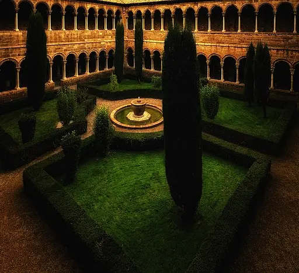
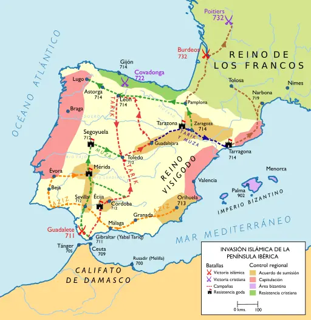
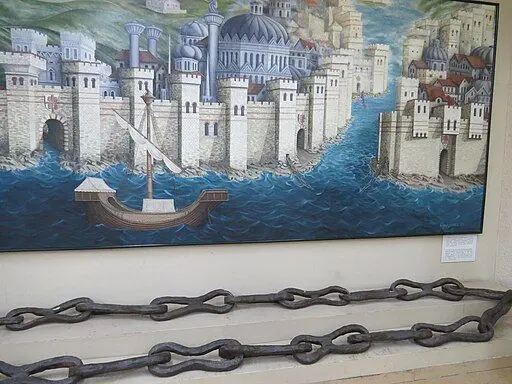
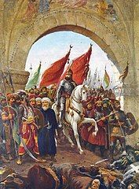

La introducció del joc coincidí amb la
plena edat mitjana, l'inici de la baixa edat mitjana
i etapa prèvia a la crisi del segle XIV. Llavors es varen donar els últims
i més destacats períodes medievals de renaixença, destacant per
la influència en els escacs principalment la renaixença otoniana
(continuació de la carolíngia), i el pre-renaixement gòtic del
segle XII, que comportà la revitalització del comerç, l'aparició de la
burgesia i la consolidació dels regnes cristians. El període es va
interrompre en el segle XIV per l'epidèmia de la Pesta Negra.
L'expansió del Xatranj per l'Europa occidental és
arqueològicament
present en
diversos indrets. En el segle X les peces de luxe són sobretot
de cristall, de manufactura musulmana, i les més senzilles, d'os.
Començant en el segle XI, les peces tornen a prendre forma
figurativa, com l'havien tingut a Pèrsia abans de la dominació
musulmana.
En el segle XII comencen a ser habituals les peces figuratives, però
encara compartint espai amb peces d'ivori simbòliques abstractes, que
ara incorporen gravats, de vegades decoratius, però la tendència és
representar el significat de la peça. Així, en el segle XIII pràcticament
desapareixen les peces simbòliques característiques del Xatranj
islàmic, encara presents en Europa fins a finals del segle XIV.
En l'edat mitjana tardana, i després de superar la crisi per
la Pesta Negra en el segle XIV, la reforma del
joc en el segle XV coincidirà amb l'aparició dels rics comerciants i
l'alta burgesia, els mecenes i el preludi del Renaixement. La
noblesa perd importància en favor del rei i els cortesans, de manera
que aviat el coneixement del joc és part dels coneixements que es
requereixen en un cortesà, emulant les indicacions dels antics savis
musulmans.
Període càlid medieval (950 - 1250)
L'Òptim climàtic medieval o període càlid medieval va
ser un període
de clima relativament càlid en Europa i altres regions del món, que va durar
de l'any
950 al 1250 EC. Durant uns 300 anys, aquestes noves condicions
climàtiques van
modificar els ecosistemes i van alterar radicalment les societats humanes.
A mesura que el nord d'Europa s'escalfava, els límits de cultiu eren més
elevats i es trobaven més al nord, de manera
que l'agricultura s'estenia i generava excedents alimentaris. En
aquella època, Anglaterra era prou càlida
com per a mantenir vinyes, els governs centralitzats d'Europa es feien cada
vegada més forts, la gent ja no
necessitava fortificacions per a protegir les seves terres cultivables,
abans limitades, i moltes persones van
marxar a la recerca de noves terres.
Amb la disminució del gel marí i terrestre a l'Àrtic a causa de l'augment de
les temperatures, es va fer possible
accedir a noves terres i els vikings van viatjar més al nord.
L'expansió de la cultura nòrdica a
través d'Islàndia fins al sud de Groenlàndia i l'establiment definitiu
d'assentaments aïllats a Terranova es van
produir en aquesta època.
A principis del segle XIII van començar les conquestes de Genguis
Khan i les seves hordes mongoles. Pel
que sembla, l'abundància d'humitat va proporcionar la potència necessària
per al ràpid creixement de l'Imperi mongol.
El soldat mongol solia disposar de cinc corsers. Amb un gran exèrcit, això
es tradueix ràpidament en enormes ramats i
una enorme necessitat d'herba.
Els monestirs i manuscrits

Claustre del Monestir de Ripoll.
Crèdit: José Luis Mieza, CC BY 2.0, via Wikimedia
Commons
És coneguda la importància dels monestirs en l'elaboració de còpies i
traduccions de les obres clàssiques existents,
Les invasions dels pobles nòrdics a l’Imperi d’Occident iniciades al
començament del s. V destruïren les biblioteques imperials esteses
per gran part d’Itàlia. Molts dels seus volums, que contenien la gran
tradició clàssica llatina, foren conservats en biblioteques particulars.
Importants dipòsits de llibres clàssics conjuntament amb els texts
eclesiàstics llatins foren establerts a les comunitats cristianes.
Durant tota l’edat mitjana, des de la fundació de
Montecassino (529) fins al
segle XV, les biblioteques de l’Europa occidental foren exclusivament
eclesiàstiques, pertanyents als monestirs o a les catedrals, i, a
partir del segle XIII, a les universitats.
La regla benedictina, amb les seves prescripcions obligant a la
lectura i l’escriptura, posava els fonaments del scriptorium i la
biblioteca que hi hagué en tots els monestirs que l’orde estengué per
Europa.
És en els monestirs que trobem la primera referència als escacs
en occident, Versus de scachis, en l'abadia benedictina
de Einsiedeln (Suïssa), amb forta vinculació amb la
dinastia otoniana del Sacre imperi Romanogermànic,
qui tingueren relació amb Gerbert d'Orlhac,
el papa Silvestre II, qui estudià en el
Monestir de Santa Maria de Ripoll.
Amb unes comunicacions gairebé nul·les a la baixa edat mitjana, i molt
minses en la plena edat mitjana, les comunicacions entre monestirs
són molt importants, i traduccions del monestir de Ripoll es varen
fer servir, per exemple, en l'abadia de Reichenau, en el llac Constança.
Pensem que pràcticament fins el començament del segle XII, i la
revitalització del comerç en el segle XIII, el mode habitual de viatjar
era entre monestirs, en comptes de fer-ho entre ciutats.
La situació en Orient s'allargà durant uns segles, i des de
Constantí fins Justinià s'organitzaren diverses
biblioteques, en Àsia Menor, Alexandria, Palestina, Atenes,
els monestirs del mont Athos, i sobretot, la
biblioteca Imperial de Constantinoble.
Aquestes biblioteques patiren múltiples incendis i invasions,
generalment destructives. La biblioteca imperial fou la més important,
arribant a tenir uns 100_000 exemplars. Però després de dos
importants incendis en els segles V i VIII, a inicis del segle XIII
patí el saqueig dels croats francs i venecians en la quarta croada.
La biblioteca Imperial, centre de conservació principalment d'escrits
grecs, desapareix definitivament amb l'invasió de Constantinoble
del segle XV, sent, tot i així, la font més important dels clàssics
grecs que han arribat fins a l'actualitat.
Tot i la importància de Constantinoble, amb una important tasca de
conservació i còpia de manuscrits per a la seva preservació, no
va ser un centre important de generació de nous documents, ni de
difusió dels existents, doncs no associava una escola
o universitat, i tampoc n'hi ha constància que fos una biblioteca
pública; l'escola neoplatònica d'Atenes fou tancada, i els seus
erudits perseguits, per Justinià. Els continguts generats per
l'imperi romà d'Orient des de Justinià foren molt minsos. Per
exemple, hom considera que es va jugar a escacs en Constantinoble,
i alguns testimonis ho testifiquen, però les referències són
pràcticament nul·les. Arribat el segle X, Damasc, Bagdad o Còrdova ja
tenien més importància cultural, doncs havien acumulat gran part dels
originals, que es copiaven en àrab, i eren els centres de producció i
difusió cultural.
L'imperi sassànida (226-651) tenia tres centres d'educació, en
Ctesifont, Resena, però principalment l'acadèmia de Gundixapur,
que es convertí en el centre intel·lectual de l'imperi en temps de
Cosroes I, oferint refugi als intel·lectuals hel·lenístics de
l'escola neoplatònica d'Atenes, perseguits per Justinià I
en el 529. Aquesta escola també va fer moltes traduccions al
Pahlavi, el persa sassànida.
En l'any 825, ja Pèrsia sota dominació musulmana, es va crear
La Casa de la Saviesa o Gran Biblioteca de Bagdad,
emulant l'acadèmia de Gundixapur; en realitat el centre acadèmic
de Bagdad es nodrí dels erudits de Gundixapur, començant la ràpida
decadència de l'acadèmia persa. La Gran Biblioteca de Bagdad
és considerada la primera universitat de la història, i actuà com
a centre de difusió del pensament islàmic durant l'Edat d'or de l'islam.
Els seus erudits actuaven també com a funcionaris, fent feines de metges,
arquitectes i assessors polítics, entre d'altres. Fou destruïda pels
mongols al setge de Bagdad (1258).
Miniatura de les Maqamat (col·lecció de comptes) d'Al-Hariri
Crèdit: Zereshk, Public domain, via Wikimedia Commons
Des del segle IX una important xarxa de biblioteques s’estengué
per tot el món islàmic: Bagdad, el Caire, Alexandria, Còrdova,
Toledo i Granada. La biblioteca de Còrdova arribà a tenir 400_000
exemplars en el segle X, en tant que la biblioteca dels cluniacencs al
segle XI no disposava més que d'uns centenars de volums; per això la
gran importància de l'Escola de Traductors de Toledo en els
segles XII i XIII, que traduïren molts manuscrits àrabs.
També molts jueus actuaren de traductors, i així foren un transmissors
del llegat cultural i científic del món àrab, tant per a jueus com per
a cristians. En occident és reconeguda l'obra d'Alfons X de
Castella, principalment un compendi de coneixement d'origen
musulmà, doncs els continguts islàmics referents al Xatranj i
altres jocs foren força extensos, principalment d'escriptors d'origen
persa.
Ja arribat el segle XIII, París fou la primera ciutat en tenir un
gran intercanvi comercial de manuscrits, amb els productors de manuscrits
encarregats de fer llibres específics per a persones específiques.
París tenia una gran població de persones riques alfabetitzades, suficient
per donar suport a les persones que produïen els manuscrits.
Aquesta època medieval va marcar el canvi en la producció de manuscrits
dels monjos en els monestirs als llibreters i escribes que vivien
del seu treball en les ciutats. En el segle XI i XII els escacs
varen popularitzar-se entre monjos, la noblesa i el clergat, però en
el XIII existeixen referències del seu ús per soldats de les croades,
sent així un factor més per a l'arribada del joc als mercaders rics i
professionals cultes que començaren a aparèixer en les ciutats.
Els segles XIII i XIV portaren un canvi profund a les biblioteques
medievals. Apareixen les universitats, i les biblioteques
universitàries, tot i que no arribaren a tenir una veritable importància
fins al Renaixement. Les col·leccions privades de llibres prengueren un
gran increment. A Itàlia, els primers humanistes, Petrarca (1304-1374),
Boccaccio (1313-1375) i, especialment,
Poggio Bracciolini (1380-1459), recorregueren les antigues abadies
i es relacionaren amb els mercaders d’orient a la recerca de texts clàssics
grecs i llatins.
Immigració europea en terres islàmiques
Interior de la Mesquita de Còrdova.
Crèdit: Timor Espallargas, CC BY-SA 2.5,
via Wikimedia Commons
Moltes ciutats islàmiques eren grans centres de coneixement i benestar,
a més d'existir gran tolerància religiosa, de manera que eren habituals
els viatges a Damasc, Bagdad, i Còrdova.
Els podríem considerar viatges culturals, i el benestar d'aquestes
ciutats incitava a molts a fixar la residència, donant-se el cas de
freqüents conversions a l'islam de cristians immigrants;
un senzill fenomen d'immigració cultural i econòmica
a les ciutats riques, cultes i desenvolupades de l'islam.
En el segle X, en temps del califa Abd-ar-Rahman III (891 - 961)
i del seu fill Al-Hakam II (915 - 976), al-Àndalus gaudí d'un
esplendor econòmic i cultural, amb centre en Còrdova, sense precedents.
Hi va haver un alt grau de tolerància de manera que filòsofs, erudits,
artistes i científics de diverses procedències, ingressaren en les seves
corts. Al-Hakam II creà en Còrdova la biblioteca que fou la més
important i rica d'Europa. Els traductors traduïren milers d'obres
gregues i llatines a l'àrab.
El califat, convertit en un important estat a la fi del regnat
d'Abd-ar-Rahman III, va mantenir relacions diplomàtiques amb
l'imperi bizantí i el Sacre imperi Romanogermànic.
El califa mantingué una delegació permanent en Bagdad per copiar o adquirir
qualsevol volum que pogués ser publicat, i també mantenia relacions amb les
delegacions de Constantinoble, Alexandria o Damasc, ciutats també molt
riques en cultura, que li permeteren seguir enriquint la
biblioteca de Còrdova.
Durant els segles XI i XII, molts erudits cristians viatjaren a terres
musulmanes per aprendre ciències. Exemples destacats són
Leonardo Fibonacci de Pisa (1170 – 1250), important matemàtic, i
Adelard de Bath (1080 – 1152) que va fer traduccions
al llatí de moltes obres científiques àrabs importants, incloent antics
textos grecs que només existien com a traduccions a l'àrab, i foren així
introduïdes en Europa. Un altre cas fou Constantí Africà
(1017 - 1087), un dels introductors de la medicina àrab a Europa. En els
segles XI al XIV nombrosos estudiants europeus van assistir a centres
musulmans d'ensenyament superior, similars a les universitats occidentals.
Pelegrinatge
Un altre motiu dels cristians per les visites a terres islàmiques foren
els pelegrinatges a Terra Santa, Palestina.
Constantí I en el 330 traslladà a Bizanci la capital de l'imperi,
i construí llocs de culte cristià en Jerusalem, com l'Esglèsia del Sant
Sepulcre. En el 603, el papa Gregori I encarregà la construcció
d'un hospital en Jerusalem, que era part de l'imperi romà d'Orient,
per a atendre i cuidar als pelegrins cristians en Terra Santa (un
hospital llavors era una mena d'alberg). El l'any 614 l'imperi sassànida
conquerí Jerusalem, fins ser reconquerida en 629 per l'emperador
Heracli, pero la Jerusalem bizantina finalment fou conquerida
pels àrabs en 638. En l'any 800, Carlemany va ampliar
l'hospital de Jerusalem, i li va afegir una biblioteca.
Des del segle IV s'establiren noves rutes de peregrinació travessant
les terres de l'imperi romà d'Orient, com a part dels pelegrinatges a
Terra Santa. Aqueste rutes no havien estat comuns fins llavors, doncs els
cristians havien estat perseguits. Aquestes rutes durant molts segles
representaren un flux cultural important que travessava Constantinoble.
Més tard, finalitzant el segle XI, aquestes rutes s'aprofitaren per a les
croades.
Un altra peregrinació important foren les rutes romees, per arribar a
Roma.
Varen tenir diferents variants, amb la facilitat d'existir sovint encara
les vies romanes, incloent ponts per travessar els passos dels rius més
difícils.
Com es pot llegir en l'apartat de
Castella i Lleó, també la
peregrinació pel camí de Sant Jaume comença a ser una ruta
cultural important per a Europa des del segle XI. Contribueix a la
comunicació entre monestirs, i des del segle XII és ja una ruta freqüentada
també per la noblesa.
És en general en el segle XI quan es comencen a reprendre les activitats
comercials de llarg abast, limitades en Europa fins llavors a les activitats
dels musulmans, les activitats marítimes de l'imperi romà d'Orient i les
activitats dels vikings, activitats que foren guerreres en l'oest, però més
comercials en l'est. Les rutes de pelegrinatge començaren a ser protegides
pels reis de la cristiandat, afavorint que fossin aprofitades per al
comerç.
L'església
L'emperador Justinià va tancar l'Acadèmia neoplatònica i les
escoles d'Atenes en una
ordenança adoptada l'any 529 que prohibí ensenyar filosofia, explicar
les lleis i
jugar als daus. Tot i que els escacs no arribaren a Pèrsia abans
d'aquesta data, i per tant,
els escacs no eren coneguts encara en l'imperi romà d'Orient,
la prohibició podria haver retardat la seva entrada a Bizanci.
Les prohibicions de Justinià anàven dirigides contra les perilloses
filosofies que
justificaven el politeísme, i la seva intenció probablement fou vincular
la filosofia
amb les apostes, el joc i la mala vida, per guanyar força de raó i suport
al seu edicte.
Potser els erudits que l'edicte va expulsar van conèixer els escacs de primera
mà, doncs foren
acollits en Pèrsia per Cosroes I.
En occident, alguns, com ara San Pere Damiani (segle XI), acusen els
escacs de ser
deshonestos, absurds, libidinosos, i una distracció de les obligacions
per als clergues.
Durant les croades fou una afició que es va difondre entre els soldats, però
algunes veus començaren a criticar-ho, i aviat es considera una distracció
poc apte
pels soldats en temps de guerra, i es dicten nombroses prohibicions.
En 1283 Alfons X va redactar el Llibre dels jocs d'escacs, daus i
taules.
L'actitud de tolerància i exprés suport regi cap als jocs d'atzar
convertiren les
tafureries en llocs d'immoralitat, i degueren provocar incalculables
danys econòmics en
una infinitat de famílies, decidint tancar-les en totes les localitats de
Castella; el joc,
en l'època, resultava ser un autèntic problema. Les comdemnes de
l'esglèsia resultaven
ser perfectes justificacions per a reis i governants, que sovint buscaven
establir l'ordre. Des
de finals del segle XIII, els interessos reials, per la pèrdua dels impostos a
les tafureries,
podien ser contraris a les prohibicions, i de vegades es definien excepcions per
a tafureries
protegides per dret reial.
Un altre motiu de reticència als escacs en occident pot haver estat el seu
origen musulmà. En 1095, tot acabant el segle XI, hi va haver la
declaració de
guerra santa (les croades) pel papa Urbà II, com a resposta a la
petició
de l'emperador romà d'Orient, Aleix I Comnè, demanant ajuda militar
contra els
seljúcides, poble d'origen turc. Ja corrien veus criticant els escacs com a
entreteniment
poc apte per als soldats, i el motiu no és clar, però l'Ordre dels
cavallers del Temple van tenir prohibició de jugar a escacs, dictada per
San Bernard de Claraval en 1128.
Tot i les prohibicions, jugaven els clergues, els homes i dones de qualsevol
nivell social i
edat. Tothom es va lliurar a la passió dels jocs d'atzar, i els escacs eren un
altre joc més,
entre jocs de daus i naips.
Segle VI: Justinià tancà l'Acadèmia neoplatònica
(529), amb estrictes
prohibicions a la filosofia i els jocs.
655 Islam: el Califa Ali Ben Abu-Talib reprovà el
joc pel fet que les
peces tenien figures d'ídols.
680: Interpretació de l'Islam prohibint els
escacs, tot i que els mateixos Califes hi jugaven.
Segle XI: Gregori VI (papa de 1045 a 1047) gran
aficionat als escacs.
1061: Pere Damià (1007-1072) escriu a Alexandre
II (papa de 1061 a 1073)
en contra dels escacs.
1093, poc després del Gran Cisma d'Orient (1054): l'Església
oriental
ortodoxa va condemnar als escacs. L'Església va erradicar
els escacs a
Rússia com a un vestigi del paganisme.
1115: l'emperador Aleix I Comnè
(1048-1118, emperador des de 1081)
n'era aficionat a jugar. Tot i això, encara va estar
censurat a les esglésies
fins a l'any 1125.
1125: En morir l'emperador, John Zonares, teòleg i historiador que
havia estat
capità de la guàrdia imperial Bizantina i secretari de l'emperador, emet una
directiva
prohibint els escacs (zatrikion) per ser
una depravació,
contrari al Cànon Apostòlic establert pel III Concili de Constantinoble..
1128: En San Bernard de Claraval, prohibeix els escacs en donar les regles
als
caballers templaris.
Segle XIII: Innocenci III (papa de 1198 a 1216)
aficionat als escacs;
en el seu escut n'hi ha un escaquer amb una àquila. Escriu sobre els escacs
Quaedam Moralitas Scaccario, un llibre de moral.
1208: el bisbe de París, Odo Sully, prohibeix al
clergat jugar als escacs.
1218: L'església prohibeix el joc en el concili de
París.
1254: Mort d'Innocenci IV (papa de 1243 a 1254).
San Lluis IX, rei de França, prohibeix els escacs
als laics.
1255: L'església comdemna el joc d'escacs en el
concili Biterrense.
1285: L'arquebisbe de Canterbury John Peckham
(1220- 1290, arquebisbe des de 1279) prohibí els escacs.
1299: Es prohíbeix al clergat jugar als escacs.
1338: En Castella, les Corts de Burgos estableixen multes si es juga als
daus o als escacs
apostant diners.
1353: Peces i escaquers apareixen en els inventaris
d'Innocenci IV
(papa de 1243 a 1254).
1365: Carles V de França (1337 – 1380, regent des de 1356, i rei des de
1364)
prohibeix els escacs, i la prohibició segueix amb
Carles VI (1368 – 1422).
1551: el Tsar Iván IV (1530 – 1584), Iván el Terrible, de Rússia
prohibí els escacs, i encara estaven prohibits en el segle XVII.
En occident les prohibicions es van donar particularment entre els segles XIII
i XIV; la reacció
fou una forta vinculació dels llibres d'escacs amb la moral, que
ja trobem des
d'Innocenci III, en Quaedam Moralitas Scaccario– Certa
moralitat dels escacs –,
a inicis del segle XIII, però serà la línia que seguirien tots els escrits fins
albirar el Renaixement
en la segona meitat del segle XV, sent els escrits de
Frai Jacobus de Cessolis
(segle XIV) un cas força
representatiu.
Com a resum de Quaedam Moralitas Scaccario podriem
explicar que
és bastant benèvol amb el rei, al qual considera just.
Quant als cavallers (cavall), en principi la seva mirada és positiva, en
línia recta, però com
després se li agrega un gir d'índole obliqua, s'interpreta que en aquest
moment s'han desviat
d'una conducta moral. El recte és el correcte, i l'oblic és el pèrfid. Tant
les reines com als alfils
se'ls considera sinuosos. A les primeres les hi acusa de mostrar una
predisposició a la violació de les
normes i, per tant, fomentar la injustícia. Pels alfils, contemplant que
aquesta peça correspon a la
figura dels bisbes, s'arriba a la conclusió que
…gairebé tots els prelats perverteixen l'odi i l'amor….
No va ser fins el segle XVI, en temps de Pius IV, de la família
dels Mèdici,
coincidint amb el Concili de Trento i l'estada en Roma de Ruy López de
Segura, llavors el
millor jugador d’escacs castellà, que es pot considerar definitivament un
canvi en la relació de l'església en vers als escacs, després de 500
anys.
Original work: Captain Blood at de.wikipedia;
Translation: Oxag at fr.wikipedia.,
Public domain, via Wikimedia Commons
Des del final del segle XI fins al segle XIII es donà el fenomen de
les croades, campanyes militars, pelegrinatges armats i
establiment de nous regnes cristians, que també tingueren l'efecte indirecte
d'intercanvis culturals, però el caràcter forçat determinat per les
circumstàncies els acosta més als botins de guerra;
sovint les peces d'escacs de cristall de roca o d'ivori es feien servir
com a embellidors d'altres peces, i, tot i existir referències, no s'ha
trobat cap joc de peces amb gemmes precioses.
Malgrat que molts nobles viatjaren a les terres de Palestina, el
fenomen frenà els intercanvis que generaven el comerç i l'immigració
cristiana pacífica a terres de l'islam. Així i tot, fou fonamental
pel restabliment del comerç internacional, tanmateix, facilità
l'acostament a alguns elements de la cultura islàmica; per
exemple, s'expliquen històries de soldats que juguen a escacs en els
seus temps lliures, indicant que els escacs ja eren un joc popularment
conegut, i la guerra contribuí a la seva difusió.
També s'ha de recordar que la rutes de les croades cap a Palestina
generalment travessaven l'imperi romà d'Orient i Constantinoble.
Les relacions entre els europeus occidentals (llatins o francs en la
nomenclatura de l'època) i els europeus orientals (grecs) s'havien complicat
des del Gran Cisma d'Orient iniciat el 1054, just abans de
l'inici de les croades. A partir d'aleshores els occidentals s'havien mostrat
hostils als orientals, tal com es va evidenciar durant la Primera, Segona i
Tercera Croada. Aquestes relacions es van deteriorar encara més el 1182 (just
abans d'iniciar-se la Tercera Croada), quan tots els estrangers de
Constantinoble
havien estat massacrats i els comerciants venecians havien estat expulsats
pels emperadors bizantins de la dinastia Àngel.
Primera Croada (1096 - 1099)
Aprofitant la crida d'auxili de l'emperador bizantí
Aleix I Comnè, el papa Urbà II va exposar la necessitat
que els cristians d'Occident es comprometessin a una
guerra santa contra els turcs, que estaven exercint violència
sobre els regnes cristians d'Orient i maltractant als pelegrins que
anaven a Jerusalem, i la conquesta de l'anomenada Terra Santa.
En la primera croada, aparegué el fenòmen de la
croada
popular, mobilitzant
unes 100_000 persones humils, homes, dones i nens, responent a la
crida papal. Tot i la pràctica aniquilació de la totalitat dels
30_000 croats que varen travessar el Bòsfor auxiliats pels vaixells
que els hi proporcionà l'emperador Aleix I Comnè, alguns altres
arribaren a Constantinoble o a dominis de l'imperi romà d'Orient sense
finalitzar el viatge, estrenyent així el contacte de francesos, alemanys
i italians amb la cultura de l'imperi d'Orient.
En la croada dels prínceps, destacaven les forces normandes, que
recentment havien estat en conflicte amb l'imperi d'Orient en territoris
de la península italiana, per la qual cosa l'emperador desconfiava d'ells.
No obstant això, aquesta croada, molt més organitzada, va aconseguir
conquistar gran part de Anatòlia, Líban i Jerusalem, sent aquesta primera
croada l'única bèl·licament reeixida, encara que només una mínima part va
anar retornada a l'imperi romà d'Orient.
Quarta Croada (1202 - 1204)
Conquesta de Constantinopla pels croats
en 1204
David Aubert (1449-79),
Public domain, via Wikimedia Commons
Partitio terrarum imperii Romaniae
LatinEmpire, CC BY-SA 3.0,
via la Wikimedia Commons
En 1202 la República de Venècia havia enllestit els preparatius de la croada
que tenia per fi atacar directament el cor del món islàmic de l'època,
la ciutat del Caire, per encàrrec papal. Però molts embarcaren en altres
ports, a més que només participaren 12_000 homes, en comptes dels 33_500
homes pressupostats. Venècia exigí la totalitat del pagament compromès,
85_000 marcs de plata, però croats tan sols pogueren recaptar-ne 51_000.
Això els deixà en un estat de summa pobresa, i un desastre econòmic també
per als venecians, que havien aturat el seu comerç durant tot un any per
preparar l'expedició. La proposta fou canviar l'objectiu, i que els
croats paguessin els seus deutes capturant el
port de Zadar, situat a Dalmàcia.
Aquesta ciutat ja havia estat dominada econòmicament per Venècia durant el
segle XII, però el 1181 s'havia rebel·lat i cercà la protecció del rei
d'Hongria i Croàcia. Però el rei d'Hongria també era catòlic i a més s'havia
ofert, almenys de manera teòrica, a participar ell mateix en la croada.
Els croats pactaren amb el príncep germà de l'emperador i arribaren a un
acord per ajudar-lo a derrocar al seu germà. El nou emperador,
Aleix IV Àngel s'adonà que no tenia riquesa suficient per pagar
el pacte, tot i la destrucció que va dur a terme
d'icones romanes d'Orient i romanes valuosíssimes per poder extreure'n l'or
i l'argent. Els croats, insatisfets, van provocar disturbis, i es va cremar
gran part de la ciutat.
Finalment els grecs assassinaren a Aleix IV Àngel, i el nou emperador
Aleix V Ducas negà el pacte amb els croats i venecians, que
saquejaren Constantinoble. Segons un
tractat prearranjat, l'imperi es distribuïa entre Venècia i els líders de la
croada, i s'establia l'Imperi Llatí (1204), que durà fins que
Constantinoble fou reconquerida per l'imperi romà d'Orient el 1261,
que tinguè el nom d'Imperi de Nicea fins reconquerir Constantinoble.
El comerç
En l'Alta edat mitjana, abans de l'any 1000, Europa era un territori
assolat pels desordres polítics i per la manca de seguretat, amb una
economia de subsistència i poca circulació de mercaderies. El comerç
era principalment un fenomen local sense rutes de llarg abast, quedant
aquestes activitats en mans de l'imperi romà d'Orient, que
traficava per mar, i sobretot del món musulmà. Els mercats
urbans començaren a animar la vida econòmica interior a partir dels
segles IX i X, i des del segle XI les primeres fires incrementaren
el comerç interior i exterior. Es va incrementar notablement la
capacitat adquisitiva dels sectors més poderosos, els quals van
sentir-se atrets pels productes de luxe procedents de l'Orient.
Els pelegrinatges i les croades tindrien un paper molt important
en aquest renaixement comercial que es manifestaria amb
l'ampliació i renovació de rutes i del volum, nombre i qualitat de les
mercaderies, amb l'aparició de les primeres associacions armades de
mercaders, i amb la de noves fires i mercats fixos.
A més de les rutes marítimes, en l'Europa continental existeixen
algunes rutes terrestres i fluvials, moltes de les quals es pensa
es remunten a Carlemany, tot i que no existeixen constàncies escrites
anteriors al segle XI, quan resultaren de gran importància en la
renaixença otoniana, el creixement de les
repúbliques marítimes de la península italiana, i el
pre-renaixement gòtic del segle XII.
Image: NASA VIsible Earth
Public domain, via Wikimedia Commons
La ruta de la seda comunicava orient amb
Constantinoble,
Alexandria i altres ports de l'imperi bizantí a
través dels
sogdians de Samarcanda. Amb la conquista musulmana de de
Transoxiana
(segle VII i VIII) aquest comerç quedà sota control dels
musulmans,
relegant l'imperi romà d'Orient a segon lloc. En el segle
XIII la
ruta quedà en mans de l'imperi mogol de Genghis Khan
fins a
final del segle XIV. Probablement podem datar en el segle
XIII el
final de l'edat d'or de l'Islam, quan Genghis Khan
acabà amb
el califat Abbàssida en el setge i destrucció de Bagdad
(1258). En
el segle XV la ruta de la seda hi era en mans de l'imperi
Timúrida.
Des del segle XI Bizanci retrocedia davant els turcs
seljúcides
perdent tota Anatòlia. En el segle XII va recòrrer a les
Croades
per combatre els turcs, però en la Quarta Croada els
croats
van prendre Constantinoble, creant l'imperi Llatí de
Constantinoble
que durà cinquanta set anys fins que l'emperador d'Orient va
reprendre
la ciutat. En el segle XIII arribaren els mongols, que varen
invadir
de nou gran part d'Anatòlia. Amb la caiguda de l'imperi
mogol, fou
l'imperi Otomà, hereu de l'imperi seljúcida, qui finalment
va prendre
Constantinoble (1453).
Variant
marítima de la ruta de la seda
L'islam també va establir la seva presència a la costa
sud-est d'Àfrica en el segle IX, quan els comerciants
bantus establerts a la costa van aprofitar les xarxes
de comerç de l'Oceà Índic, col·laborant en la formació
de la identitat Suahili. Això donà lloc al corredor
Suahili, que des de Zanzíbar va estendre
una xarxa comercial per la costa oriental africana, i,
aprofitant els monsons de l'Oceà Índic, una
variant marítima de la ruta de la seda.
Aquest corredor Suahili era una provisió important
d'or, ivori, i cristall de roca per a les terres musulmanes,
amb un evident impacte en la disponibilitat d'ivori de
l'època. També s'importaren diamants, pells i esclaus.
Radhanites
Els Radhanites eren comerciants jueus de l'Edat mitjana.
Van dominar el comerç entre el món cristià i el musulmà entre
600 i 1000 de l'era cristiana. Les rutes comercials obertes sota
l'Imperi romà van continuar sent utilitzades durant aquest període
en gran part gràcies als esforços d'aquests mercaders. La seva
xarxa comercial cobria la major part d'Europa, Àfrica del Nord,
el Pròxim Orient, Àsia central i una part de l'Índia i de la Xina.
Parlaven àrab, persa, grec, franc, espanyol i eslau. Viatjaven
d'oest a est i d'est a oest, parcialment per terra, i parcialment
per mar, aprofitant les rutes de la seda, i també rutes més
curtes, d'intercanvi entre cristians i musulmans.
Les dificultats que es trobaren des del segle X, amb la
caiguda de la dinastia Tang en 908, el col·lapse de l'estat
khazar uns seixanta anys més tard i el posterior sorgiment des
de mediats del segle XI dels estats expansionistes turc-perses
de la dinastia Seljúcida, poc tolerants a altres religions,
provocaren mica en mica un canvi en l'enfocament del negoci,
cap a la banca.
Probablement la religió judia del poble khazar, que s'estima es
convertiren a inicis del segle VIII, tingui relació amb el
contacte amb comerciants radhanites, sumat a les circumstàncies
de la posició intermitja dels khazars entre l'Islam de Pèrsia i
el cristianisme de l'Imperi Bizantí, junt amb la tolerància
a les religions del llibre del Califat Omeia.
Rutes de l'imperi romà d'Orient
El comerç de l'imperi romà d'Orient era
fonamentalment marítim,
amb importants ports: Constantinoble, Atenes, Tessalònica,
Venècia, Gènova,
Pisa, Alexandria, Trípoli, Beirut, Tiro...
Els àrabs es van expandir a costa dels imperis Bizantí i
Persa. En el
segle VII van prendre Síria, Pèrsia, Egipte i Líbia, i en el
segle VIII
Cartago (Tunis),
la península ibèrica, i
Samarkanda.
Les repúbliques marítimes italianes, inicialment la
República de Venècia i la República d'Amalfi,
abdues remanents de les possessions italianes de l'imperi
romà
d'Orient desprès de la invasió dels longobards, tingueren
relacions
comercials amb el món islàmic: el califat de
Còrdova, el califat
Abbàssida i el califat Fatimita. Inicialment aquestes
repúbliques eren
una part del comerç marítim de l'imperi romà d'Orient, però
amb el temps
anaren agafant independència: Venècia fou independent des
del segle IX,
amb gran independència ja des del segle VIII, i Amalfi,
obtinguè la
independència a mitjans del segle X.
A partir del segle X, la decadència de Bizanci va deixar el
control
del comerç amb Orient a mans de ciutats
mediterrànies. Algunes
encara eren part de l'imperi romà d'Orient, com
Venècia,
Amalfi (Nàpols), Ravenna o Ancona; altres ja pertenyien a
les
conquestes longobardes, posteriorment part del
Sacre imperi Romanogermànic, com Gènova o Pisa;
però també amb el temps aparegueren altres ports
d'importància en
altres llocs de la Mediterrània,
com Marsella o Barcelona. Des d'aquestes ciutats es
distribuïen les
mercaderies cap a l'interior del continent, connectant amb
les
ciutats de Constantinoble, Antioquia, Alexandria,
Tessalònica,
Trípoli, Beirut o Tiro, que tenien connexions amb la ruta de
la
seda. Així es va iniciar un canvi
fonamental: els bizantins i els àrabs començarien a ser
desplaçats com a intermediaris en el comerç entre
Orient i
Occident. Des de finals del segle XII i principis del XIII,
els ports de la península itàlica dominarien la
Mediterrània oriental practicant el comerç amb Bizanci i,
alhora,
mantenint relacions comercials amb l'islam. Venècia
tinguè
l'hegemonia en l'activitat comercial.
Rutes de la península ibèrica
Emirat de Còrdova en l'any
814.
Image: Crates, CC BY-SA 4.0
via Wikimedia Commons
En la península ibèrica, Còrdova, emirat en el
segle IX, i
califat en el segle X, fou un centre de molta importància
fins la
disgregació en els regnes de taifes en el primer terç
del segle XI.
La influència del Califat sobre els regnes cristians del
nord va arribar
a ser tal que entre 951 i 961, els regnes de Lleó i Navarra,
i els comtats
de Castella i el Barcelona li rendien tribut.
Sembla que en aquests primers segles una ruta unia Catalunya
amb Flandes per
terra, i potser també per mar fins a Provença i després per
terra; una altra
ruta marítima i potser també terrestre comunicava Catalunya
amb l'Espanya
islàmica. En canvi, les rutes per l'oest amb Baiona i
Bordeus o Tolosa de
Lenguadoc foren pràcticament inactives, fins que en el segle
XI el
camí de Sant Jaume va prendre importància.
La pelegrinació pel camí de Sant Jaume començà en el
segle IX, tot i que els regnes de Lleó, Castella i Navarra
es mentingueren
practicament aïllats d'Europa fins a inicis del segle XI.
Però és també
justament en el segle XI que els pelegrinatges a Roma,
Jerusalem i Santiago
de Compostel·la prenen força, i el camí de Sant Jaume rebrà
suport de nobles
i reis, millorant calçades, construint ponts i hospitals, i
fent altres
millores.
Els pelegrins viatjaven en grups per a protegir-se,
incorporant-se
mercaders en aquests grups. Ja en el segle XII s'establiran
normes per a
protegir als pelegrins, i es crea l'Orde de Sant
Jaume. És a partir
del segle XII que el camí pren màxima importància a nivell
europeu.
El camí de Sant Jaume era la continuació natural de la
via Règia,
la via principal de comerç terrestre europea d'est a oest, i
la ruta
de pelegrinació provocà que s'obriren moltes variants
europees millorant
així les rutes de comerç i comunicació.
En el segle XI els regnes de taifes tingueren
relacions comercials
i polítiques amb les repúbliques italianes,
principalment Gènova,
Pisa i Venècia; les relacions comercials d'aquestes
repúbliques
s'estenien a tots el ports importants del mediterrani,
actuant com a pont
amb les dominacions musulmanes: Tunis, Trípoli, Beirut,
Alexandria, Tiro,
Antioquia... però també amb l'imperi d'Orient: Atenes,
Tessalònica,
Constantinoble...
A Catalunya, les primeres drassanes apareixen al segle
X a
l'Empordà, i les construïdes pel califa de Còrdova a
Tortosa. En
Barcelona, la costa del Poble Sec fou emprada
habitualment
fins al segle X com a port natural de la ciutat. La mateixa
ciutat disposava
d'un port, possiblement al petit estuari de la desembocadura
del
torrent del Merdançar
(Riera de Sant Joan,
actualment Via Laietana), i els vaixells hibernaven
a la platja oberta
que estava entre el Puig de les Falsies (a l'actual Pla de
Palau) i el
Convent de Santa Clara de Barcelona (a l'actual Parc de la
Ciutadella).
Inicialment va haver-hi una grada a la platja per la
construcció i reparació
de vaixells, i a principis del segle XIII ja es
construïen vaixells
en unes noves drassanes, prop de la muntanya de
Montjuic.
La presència de jueus andalusins a la Barcelona dels
segles X i XI
suggereix que els contactes comercials es mantenien amb el
món musulmà de
la península, i probablement actuant de pont entre aquest
món musulmà
marítimament amb el Llenguadoc, i per via terrestre amb
altres indrets
d'Europa. La importància del comerç naval a Barcelona
va anar creixent
durant el segle XII, arribant a tenir un port d'un gran
èxit comercial en
el segle XIII, incorporant-se València i
Mallorca, aquesta última
amb una important tradició comercial heretada de la seva
etapa musulmana.
Catalunya tenia la comunicació amb Europa senzilla,
amb l'opció de
viatjar per terra, amb els Pirineus poc elevats en la
costa,
en la província de Girona, que permetien
connectar l'antiga via Augusta amb la via
Domícia cap
a Nimes, Beziers i Narbona, amb la possibilitat de remuntar
el
riu Roine, o pujar els Alps i passar el coll de
Montgenèvre fins a
Torí, o fins i tot anar cap a Lausana pel Gran San Bernard.
Però també
existeix una senzilla ruta per mar fins al riu Roine
amb vaixell,
sense cubrir gaire distància, i el riu Roine permet una gran
connectivitat. També en Catalunya, la vall natural
de la Cerdanya,
vall del riu Segre, permet travessar els Pirineus amb
facilitat, connectant
l'Urgell amb el Llenguadoc, i, a diferència d'altres passos
del Pirineu, és transitable gairebé tot l'any.
Vies imperials, romees i fluvials
La Via Regia va ser una ruta medieval que travessava
d'est a oest
el territori de l'imperi Romanogermànic. Va tenir protecció
reial per als
viatgers i comerciants entre el segle XIII i el XIV. No era
una via
homogènia, sinó un conjunt de camins que transcurrien entre
ciutats.
El recorregut, des del camí de Sant Jaume, Burdeus,
Poitiers, Tours,
Orleans, París, Reims, Frankfurt. Des de Frankfurt la branca
oest anava a
Aquisgrà, Brusel·les i Bruges, i cap a l'est
Leipzig, on es
creuava amb la Via Imperii, Breslau, Leòpolis i Kíev,
o bé, per
Bielorussia, Vilnius (Lituània), Smolensk i Moscú.
La Via Imperii transcurria des de Roma, Florència,
Venècia i Verona,
Trento, travessant els Alps per Brenner fins a Innsbruck,
Nuremberg,
Leipzig, Wittenberg, Berlín, i arribava al mar en Szczecin
(Polònia).
La Via Francígena, el camí dels Francs quan es
caminava cap al nord,
també coneguda com a via Romea quan es caminava cap al sud,
va ser la
principal ruta de pelegrinatge cap a Roma des del nord.
La via Francígena pròpiament dita prové d'un itinerari
desenvolupat
pels llombards en el segle VII, i discorre a Itàlia entre
Vercelli
i Roma. La continuació des de Vercelli fins a Cantèrbury
documentada
des del sigle X, sería una de les diverses Vías Romeas que
han existit
en Europa, utilitzades pels pelegrins per anar a Roma.
Vercelli encamina
cap a Torí, travessant els Alps pel Gran San Bernard,
Lausana,
Champagne, Reims, i en Calais travessar el canal per arribar
a Canterbury.
Altres Vies Romeas podien permetre prendre des de
Lausana la ruta per anar cap al nord, prenent la vall del
Rin a Basilea.
Des del Rin, remuntant un modest afluent del Rin, el
riu Lahn, o bé per via terrestre des de Frankfurt, es pot
arribar a Marburg, i després es pot seguir, per via
terrestre, fins a Paderborn i Stade (prop d'Hamburg).
També, en comptes del Gran San Bernard, es podia
anar des de Torí pel Coll de Montgenèvre,
seguint l'antiga via Domícia que segueix el riu
Durance per Briançon i Gap, on llavors es podia tombar
cap a Valença, Liò, Troyes i París, o seguir la
via Domícia per anar a Ambrun, Nimes, Beziers i
Narbona, enllaçant amb la via Augusta en els
Pirineus.
Aquestes últimes rutes no es troben indicades en el
mapa de Martin Jad Mansson.
El Roine
Per via fluvial, el Roine permet ser remuntat
comunicant Arles, Avinyó, Valença i Lió, on es pot
fer servir el riu Saona, i amb un
transport terrestre es pot arribar al riu
Yonne, afluent del riu Sena, per
arribar a París, o alternativament, seguir la
via terrestre, cap a les ciutats de Troyes, Reims i
Bruges.
Aquestes rutes del Roine permetien la fàcil comunicació amb
el nord d'Europa des dels ports de Gènova, Pisa, Marsella o
Barcelona.
Aquestes rutes, junt amb la ruta pel
pas
del Mont Cenis que permetia la
comunicació des de Gènova, travessant per Torí cap a Lió, o
la via Francígena, travessant els Alps pel
Gran San Bernard, es dirigien cap a Bruges, París
i Reims. En la província de Champagne, en els segles XII i
XIII preneren importància
les fires,
probablement com a conseqüència d'aquest nus de
comunicacions.
El Rin
El Rin connectava en Basilea amb les vies que
arribaven fins a Suïsa, després de travessar el pas del
Gran San Bernard des de la plana Padana, partint de
Venècia o de Milà.
Travessa Estrasburg i Magúncia, on s'ajunta
el seu afluent navegable Main, que travessa
Frankfurt molt poc abans d'arribar al Rin.
El Rin mig connecta Colònia i Bohn. La desembocadura
en la mar del Nord forma un delta conjunt amb els rius Mosa
(que neix a França, i travessa Xampanya, les Ardenes i
Maastricht) i el riu Escalda (que neix a França i travessa
Ambers), formant el delta del Rin-Mosa-Escalda;
tots tres rius són navegables, sent una important
confluència de comerç i intercanvi en el nord d'Europa.
Ja des de temps de Carlemany va existir el projecte de fer un
canal per connectar el riu Main, afluent navegable
del Rin, amb el riu Danubi, però aquest projecte,
iniciat en temps de Carlemany, no es va fer realitat fins
a l'any 1992. El Danubi era fronterer i dominat pels àvars,
que va expulsar d'Austria Carlemany. Els àvars compartien
espai en la part baixa del riu amb magiars (húngars)
vinculats amb els khàzars, protobulgars, i també altres
pobles turquesos; era una zona de conflictes, pacificada per
Carlemany en la zona alta del riu, des d'Austria, però patia
molts conflictes amb l'imperi romà d'Orient, fronterer pel
sud en el tram més baix del riu.
L'Elba
El riu Elba també és navegable, i de molta importància
per la regió
de Saxònia. La desembocadura és en Hamburg, i
uneix també les
ciutats de Magdeburg i Bardowick. El seu afluent
navegable, el
riu Saale, travessa la ciutat de Halle, i a
Leipzig arriba
l'Elster Blanc, afluent del Saale. Un altre alfuent
important de
l'Elba és el Vltava, que travessa Praga.
L'Elba va delinear les parts orientals d'Alemanya, on la
servitud era més
estricta, va prevaler més temps, i els senyors feudals van
tenir propietats
més grans que en l'oest. La conca de l'Elba va ser essencial
per a l'èxit
d'Hamburg i de la Lliga Hanseàtica.
Comerç a la mar Bàltica
L'illa de Gotland, al sud de Suècia tenia gran
tradició comercial.
Durant cent anys els vikings russos van navegar sota
la bandera de
Gotland a Nóvgorod, arribant els comerciants de Visby
a establir
sucursals a la ciutat russa. Els escandinaus van liderar el
comerç
internacional en la zona de la mar Bàltica abans de la Lliga
Hanseàtica,
establint importants centres comercials en el segle IX de la
nostra era,
com ara Birka, en l'illa de Björkö, a Suècia, o Hedeby i
Schleswig, ambdues
en el sud de la península de Jutlàndia, doncs
permetien fer una
drecera per terra entre la mar Bàltica i la
mar del Nord,
per no rodejar la península per mar.
La ciutat de Visby, en l'illa de Gotland funcionava com al
principal centre
comercial en la mar Bàltica abans de La Hansa.
En els segles XII i XIII en Alemanya es van crear moltes
noves ciutats en
les costes de la mar Bàltica, com Lübeck, Rostock o Wismar,
que, per
protegir-se del saqueig, es van agrupar. Per una altra
banda, en 1157 els
mercaders de la ciutat de Colonia obtingueren privilegis per
comerciar a
Londres. De aquesta manera, a inicis del segle XIII,
mercaders
alemanys establerts a l'illa de Gotland van constituir
Lliga Hanseàtrica
(La Hansa) integrada per Colònia i vint-i-nou
ciutats més.
L'associació mercantil obtingué importants privilegis
comercials,
especialment a Anglaterra, al comtat de Flandes (Bruges) i a
Rússia.
La Ciutat
Lliure de Lübeck acabà sent
el centre més poderós de l'agrupació, que en 1241 signà un
tractat amb
Hamburg per compartir el control de la ruta entre
la mar Bàltica
i la mar Negra (Ruta de l'ambre), i la unió
Lübeck-Hamburg
signà en 1252 tractats comercials amb Flandes.
Ruta de l'ambre
La ruta de l'Ambre és una ruta comercial europea
que unia els
territoris de la mar Bàltica, des de prop del mar del
Nord fins a
Nóvgorod i la desembocadura del río Nevà, on
actualment hi és San
Petersburg, amb Itàlia, Grècia i Egipte, per transportar
l'ambre, usat
principalment per a ornaments de luxe. La ruta combinava
transport terrestre
(amb una calçada pavimentada pels romans) i fluvial (a
través dels rius
Dnièper i Vístula, principalment) i va
iniciar-se ja en la
prehistòria.
Volga i Dniéper:
Rutes dels khazars i varegs
La ruta
comercial dels varegs als grecs i la
ruta comercial del
Volga van permetre
mantenir una comunicació entre el Rus de Kíev els
països escandinaus i de la
mar Bàltica amb el mar Negre, l'imperi romà
d'Orient, Pèrsia i Mesopotàmia.
La ruta dels varegs als grecs feia servir el riu
Dniéper per arribar al
mar Negre, en tant que la ruta del Volga seguia
el riu per les terres
dels khazars, la mar Càspia, i permetia arribar
fins a Bagdad. Aquestes
rutes les practicaren primer els khàzars, i
posteriorment els
varegs, vikings de Suècia.
És gran la importància d'aquestes rutes per la difusió
dels escacs, doncs va ser el camí d'introducció en
Rússia, i quasi amb total seguretat a Escandinàvia,
i des d'allà a les illes britàniques. A més, existeix
constància que els escacs arribaren per aquesta ruta
des de Pèrsia abans de l'arribada de l'Islam,
presentant una visió diferent al Xatranj dels
musulmans.
Península ibèrica: Castella i Lleò

Invasió islàmica de la península ibèrica.
NACLE, CC BY-SA 4.0, via Wikimedia Commons
Fou, sense dubtes, la península ibèrica la principal porta d'entrada
del Xatranj en Europa, com a conseqüència de la presència musulmana
en la península des de
començaments del segle VIIIfins a finals del XV. Tot i això,
s'ha d'entendre que en els segles IX, X, i gran part del segle XI, el
contacte dels regnes cristians de la península amb la resta d'Europa
fou generalment llunyana per a un fluid intercanvi cultural.
Practicament fou amb la mort d'Almansor i l'aparició dels
Regnes de Taifes quan començaren els tímids contactes europeus
de Sanç III de Pamplona, a finals del segle X i inicis del
segle XI. Anteriorment, la resistència àstur i vascona hi era en
un aïllament que fins i tot es mantenia culturalment separada
del món islàmic, els seus enemics.
El Camí de Sant Jaume fou
un punt important per als intercanvis culturals amb Europa, però
l'inici a nivell europeu es pot datar en el segle X, amb la
peregrinació d'alguns clergues i bisbes. La gran expansió i
popularització es dona en el segle XI, coincidint amb un entorn
polític més favorable després de la mort d'Almanzor,
i es comença la construcció d'hospitals i millores dels camins i
calçades. La construcció de l'actual catedral de Santiago es va
iniciar en 1075, l'última pedra va ser col·locada en 1122 i la
catedral va ser consagrada en 1128.
A final del segle XI el regne de Castella incorpora Toledo,
que ja en el segle XII esdevindrà un important centre cultural,
coincidint amb el suport de les autoritats al Camí de Sant
Jaume protegint els pelegrins. En el segle XIII ja
existeix una gran infraestructura associada al Camí,
l'afluència de nobles s'incrementa, i el retorn cultural cap a la
península ja és força significatiu. Després d'uns primers anys de
convivència religiosa, amb l'apropiació dels escrits àrabs
l'Escola de Traductors de Toledo creà a començament
del segle XII un centre cultural de molta importància per a
tota Europa. Aquest centre arribà al seu clímax en el segle XIII, amb
Alfons X, qui feu
una gran recopilació del coneixement islàmic dels escacs, probablement
coneixement d'origen persa, incorporant moltes aportacions castellanes.
Així, són els segles XII i XIII el gran moment cultural de Castella
i Lleó , sent principalment a llarg el segle XIII que l'obra
generada per l'Escola de Traductors de Toledo cobra rellevància.
De fet, tot i haver-se tancat després de la mort d'Alfons X, la
importància dels seus treballs es mantindrà en els propers segles.
Península ibèrica: Catalunya i Aragò
Mapa anacrònic de les possessions
de la Corona d'Aragó.
Milenioscuro (Original) Indpcatll
(Translation), CC BY-SA 4.0 via Wikimedia Commons
A començament del segle IX, durant l'època de les invasions àrabs,
l'imperi de Carlemany creà els comtats de Catalunya i Aragó
com a comtats fronterers per a evitar invasions musulmanes;
foren el que s'anomenà la Marca Hispànica,
tot i que eren un conjunt de comtats que mai tingueren una entitat
política comuna. En realitat, el regne de Pamplona
mai no va ser dominat, ni pels visigots,
ni pels musulmans. El comtat d'Aragó esdevingué regne després
de l'unió amb el regne de Pamplona, alliberant-se primer del
vassallatge franc, i a començament del segle XI del vassallatge de
Pamplona. Catalunya s'alliberà del vassallatge dels francs començant
el sistema hereditari amb Guifré I, i tot començant el segle X,
el seu fill Guifré II ja no presta vassallatge als francs.
Trobem en Catalunya les primeres referències a fitxes d'escacs
de cristall de roca, esmentades en el testament
d'Ermengol I d'Urgell, redactat en ocasió de
l'expedició militar dels catalans contra Còrdova en 1010, que
resultà en el saqueig de la ciutat. En 1056, en el testament
d'Ermessenda de Carcassona també es referencien unes
altres fitxes d'escacs de cristall de roca.
A més es dona el cas de l'existència de jocs de cristall de roca
com els d'Àger, a la comarca de la Noguera de Catalunya, i
diverses
constàncies
documentals en altres llocs: el
monestir de Santa Maria de Ripoll, en Girona
(inventaris de 1008, 1047, 1066 i Segle XII), els escacs ja
perduts de la catedral de Roda de Isàvena,
municipi en la Baixa Ribagorça de l'Aragó, esmentades per un
viatger del segle XIX i en un inventari de la catedral, i,
finalment, unes altres fitxes són esmentades en l'inventari del
monestir de San Andrés de Fanlo, en el Sobrarbe, província
d'Osca, Aragó.
Hom no dubta de la introducció dels escacs en Catalunya des del món
musulmà de la península, sent les hipòtesis més coherents de la
procedència de les peces de cristall de roca el comerç, o bé els
regals diplomàtics. També, de la mateixa manera, és fàcilment
explicable la presència, més dispersa, en altres punts de la península,
però des del segle IX, i sobretot en els segles X i XI, Catalunya era
el camí terrestre natural que comunicava les terres musulmanes de
Còrdova amb Europa.
El monestir de Ripoll fou un important centre cultural, parcialment
gràcies a la seva col·lecció de manuscrits, alguns d'ells perduts
pel pas del temps, la majoria desapareguts en l'incendi que destruí
la biblioteca del monestir en l'any 1835, i la major part dels
còdexs ripollesos restants són conservats a l'Arxiu de la Corona
d'Aragó. El monestir en l'any 979 disposava de 69 volums, el 1008
ja eren 121, que es van convertir en 246 a la mort de l'abat Oliba
el 1046. La majoria d'aquests manuscrits es copiaven i es reproduïen
en el propi scriptorium.
L'any 925 consta que el monestir va rebre una dotació de llibres
per part del comte de Barcelona i la seva esposa. Durant l'època
de l'abat Arnulf (948-970) es van realitzar nombroses còpies, la
majoria de les quals eren traduccions d'obres àrabs de tractats de
matemàtiques o astronomia. Aquestes relacions amb la cultura
àrab es van consolidar durant el regnat d'Al-Hàkam II
(961-976), al qual van visitar a Còrdova ambaixades de dignataris
palatins i religiosos procedents de Barcelona. Segurament d'allà
procedien alguns dels manuscrits dels que es van valdre a Ripoll.
A diferència dels scriptorium d'altres monestirs, a
Ripoll es varen fer traduccions d'obres àrabs molt tempranament, i això,
junt amb la localització geogràfica, el situava en una situació d'intercanvi
cultural amb Europa i altres monestirs europeus. Per exemple, es conserva
un còdex recopilació de tractats sobre el disseny teòric, aplicacions i
mode de funcionament de l'astrolabi, i un altre còdex recopilació de
diferents tractats musicals des de l'antiguitat tardana fins el segle
XI, junt amb un brevarium per facilitar l'ensenyament de
música. L'any 1070, i durant cent anys, el monestir va dependre, junt
amb molts altres monestirs catalans, de l'abadia de Sant Víctor, en
Marsella, i la pèrdua de la important biblioteca d'aquesta abadia molt
rica en manuscrits antics, coneguda per un inventari de la segona meitat
del segle XII, podria haver tingut relació amb alguns exemplars del
scriptorium del monestir de Ripoll, i qualsevol còpia que pogués
haver-ne tingut va desaparèixer en dispersar la biblioteca, probablement
Giuliano di Pierfrancesco de'Medici, en la segona meitat del
segle XVI. De qualsevol manera, el monestir de Ripoll va rebre molts danys
en el terratremol de 1428, el més gran registrat a Catalunya que causà
més de mil morts, i finalment la biblioteca fou incendiada en 1835
pel regiment espanyol dels Tiradores de Isabel II en la
primera guerra carlista.
L'existència de peces d'os i d'ivori, que es produeix en tot el territori
de l'Europa occidental, són testimonis de la gran i ràpida difusió
que tingueren els escacs, resultant de gran utilitat les seves
datacions. En el cas concret de les peces d'artesania en cristall de
roca d'Osnabrück, conèixer la seva procedència podria resultar de gran
importància, pel fet que són peces musulmanes d'importació, i el camí
recorregut per aquesta importació podria ser rellevant i esclarecedor
per determinar el camí que va recòrrer el coneixement del joc.
Les nombroses referències als escacs molt tempranes en Catalunya
segur que tingueren força influència posteriorment, quan entre els
segles XII i XV el regne d'Aragó es va estendre per València,
Mallorca, Sardenya, Nàpols, Còrsega, Rosselló, Provença, Cerdanya i
fins i tot Atenes. Aquests regnes foren, sense dubtes, un punt de gran
importància per a l'intercanvi cultural, sovint coincidint amb la
cultura bizantina.
Fem un incís, i recordem que culminà la contribució catalana amb
la introducció des del regne de València dels nous escacs
a finals del segle XV. En aquell moment València manté amb
la Itàlia del Renaixement unes grans relacions culturals,
arran les expedicions d'Alfons el Magnànim i
l'establiment de la cort a Nàpols, així com els contactes de
la influent família Borja, amb origen a
Borja (Aragó), més tard establerta a Xàtiva
(regne de València), posteriorment en Gandia i
Itàlia. Aquestes causes afavoriren la ràpida propagació a Itàlia
dels Escacs de la Reina, i trobem en 1506 a
Francesc Vicent
en la cort de Lucrècia Borja. Aquests escacs amb la nova
impremta es propagaren per tota la península Ibérica publicant-se
en 1495 del llibre de Vicent, i junt amb l'èxit en les
corts renaixentistes italianes, en tota Europa van ser ràpidament
acceptades com les noves regles del joc.
València llavors, per als escacs, va ser el nexe d'unió amb les
corts renaixentistes italianes, incorporant la tradició
per aquest joc que recollia, tant de Catalunya com de Castella,
en una terra on ja el joc tenia gran tradició i creixia amb les
noves corrents humanistes. Combinant-ho amb la recent incorporació
de l'impremta, i la difusió dels escacs entre la noblesa
europea, resultà en una autèntica conxorxa que va fer triomfar
els Escacs de la Reina.
Península italiana i Sicília
Itàlia en l'any 1000
Public domain, via Wikimedia Commons
No s'han d'oblidar altres indrets amb gran importància. Itàlia
també va tenir presència musulmana; en Sicília, sota pressió àrab des
dels segles VII i VIII, l'invasió començà en el segle IX, sent l'ocupació
principalment entre els segles X i XI,
incloent també importants assentaments en la península italiana. La prova
d'aquesta influència islàmica es pot veure en els
escacs de Venafro del segle XI.
L'expansió dels escacs per la península italiana està confirmada cap a
mitjan del segle XI per una carta de Sant Pere Damià, on el
cardenal d'Ostia es queixa al papa de l'èxit dels jocs de taula entre
els clèrgues del seu entorn.
Primera pintura dels escacs
en occident, en la Capella Palatina de Palerm, Sicília (1143).
Public domain, via Wikimedia Commons
La conquesta musulmana de terres italianes va ser llarga, i amb moltes
batalles. L'Emirat de Sicília va tenir una època de properitat ja
en el segle X, amb una important reforma de l'agricultura, provocant que
Palermo esdevinguè un centre de comerç, però l'illa no fou conquestada
completament fins a finals del segle X, limitant el tràfic amb estrangers.
La importància i la influència en Europa de Palermo no pot ser comparada
amb la importància de l'Emirat de Còrdova, des de la península ibèrica.
Tot i això, a Sicília, arran de la conquesta islàmica de l'illa el 965
i de la seva reconquesta pels normands el 1091, es va desenvolupar un
sincretisme cultural normand-àrab-romà d'Orient, exemplificat per
governants com el rei Roger II (1095 - 1154), que tenia soldats,
poetes i científics islàmics a la seva cort. La capella Palatina de
Palermo, encarregada per Roger II, és un clar exemple d'aquest
sincretisme cultural; en aquesta capella es pot veure la primera
representació en pintura d'occident d'una partida d'escacs (1143).
Havia estat fins llavors Sicília part de l'imperi Bizantí, juntament amb
l'Exarcat de
Ravenna entre el segle VI i el segle VII,
i més tard, entre els segles X i XI, els bizantins s'establiren en el
Catepanat
d'Itàlia, fugint de la
invasió lombarda pel nord i la islàmica per Sicília. La presència bizantina
en Itàlia s'allargà VI segles, fins a ser definitivament expulsats de la
península pels normands en 1071.
Posteriorment, en els inicis del Renaixement, en 1500, Itàlia prendrà un paper
fonamental per al joc d'escacs, donat el gran interès pels escacs en aquestes
corts, seus de mecenatges d'artistes, però també pensadors i científics, com la
cort d'Isabel d'Este, però sobretot participaren de manera directa,
acollint a Francesc Vicent com a
erudit en la cort de Lucrècia Borja. És molt probable que l'acceptació
dels nous Escacs de la Reina estiguès fortament vinculat al seu èxit en
aquestes corts.
Imperi romà d'Orient
Imperi Bizantí
Original: Varis - Derivative work: Roke~commonswiki,
CC BY-SA 3.0, via Wikimedia Commons
Arribat aquest punt, és important senyalar un altre punt d'entrada dels
escacs en l'Europa occidental que sembla, no només de gran importància,
sinó particularment decisiu: Bizanci. Els escacs en l'imperi Bizantí
entraren directament des de Pèrsia, abans de la seva ocupació musulmana;
no ens ha d'estranyar que trobem elefants i carros, les
representacions perses originals pels alfils i les torres,
en uns escacs de fabricació italiana en
el segle XI;
aquestes peces sembla que tindrien relació amb les
guerres
bizantí-normandes que van lluitar
pel control del sud d'Itàlia, Sicília, els Balcans i Constantinoble.
L'intercanvi cultural de Pèrsia amb Bizanci va ser llarg, i sovint
intens. El llarg conflicte de VI segles també va
incloure llargues temporades de pau i enteniment entre ambdós imperis,
com va ser el cas del temps de Cosroes I, a qui s'atribueix haver
rebut el joc dels escacs des de l'Índia. Cosroes I va donar
acolliment als últims filòsofs pagans d'Atenes (imperi romà d'Orient)
quan l'emperador Justinià va tancar
l'Acadèmia neoplatònica.
Una ordenança adoptada en 529 i enviada a Atenes prohibí
ensenyar filosofia, explicar les lleis i jugar als daus;
és molt probable que els escacs quedessin inclosos en aquesta ordenança,
retardant la seva introducció en l'imperi romà d'Orient.
L'imperi romà primer va prohibir l'ensenyament de la filosofia hel·lènica,
va tancar les escoles d'Atenes, l'últim asil de lletres i filosofia,
i va acabar confiscant tots els béns. En general, es creu que no es va poder
reprendre cap activitat filosòfica a Atenes després de les mesures de prohibició
del 529, amb repercusió a totes les altres escoles neoplatòniques que també
hagueren de tancar: l'escola siria, l'escola de Pèrgam i l'escola d'Alexandria,
així com els neoplatònics de l'Occident llatí en les colonies italianes.
En el periode que anomenaren la pau perpètua, tot i que durà
només vuit anys, l'imperi romà acordà en tractat de pau amb Pèrsia que
permetia que la filosofia pagana no fos perseguida, estretant el contactes
culturals. En 562 signaren el tractat dels cinquanta anys de pau,
que només durà deu anys, i finalment el regnat de Cosroes I acabà en
una de les etapes de guerra més cruentes amb l'imperi romà d'Orient.
En un text de l'historiador àrab d'origen persa al-TabaríMuhàmmad ibn Jarir at-Tabarí (839-923) es reflecteix una carta
de l'emperador Nicèfor al califa Harun ar-Raixid de l'any 802 on
s'esmenten metafòricament algunes figures d'escacs, suggerint la
pràctica dels escacs a Bizanci. Posteriorment, l'historiador àrab
Al-Massudí (896-956) es refereix als grecs, en relació amb
els escacs, en dos llocs del seu Muraj adh-dhahab
(Les prades d'or):
Els grecs (یُونانِیان Yuunaaniyaan del persa यूनानियान), els bizantins
(الروم ar-Rum) i altres pobles tenen teories i mètodes especials
sobre aquest joc...
Muraj adh-dhahab
Els escacs en Bizanci prenien el nom de Zaquitrion, tot i
que generalment aquesta paraula s'associa, incorrectament, amb una
modificació del Shatranj per jugar-ho en un tauler circular de
la mateixa mida que el tauler regular (64 caselles). Aquesta varietat
del Shatranj en realitat és al-Muddawara Shatranj
(Shatranj Circular), o també anomenat ar-Rûmîya Shatranj,
(Shatranj Byzantí), doncs sembla que aquesta modificació fou molt
popular a Bizanci, perquè feia el joc més ràpid i àgil, però l'origen
i la data d'aquesta variant es desconeix, i sembla més aviat
d'origen àrab o persa. Es pot descartar que en Bizanci només es juguès
a aquesta variant de Shatranj, i, de fet, totes les referències
a la variant circular són força tardanes; podem observar,
per exemple, que no apareix en el Llibre dels jocs
d'Alfons X, i això ens podria fer pensar que fos una variant creada,
com a mínim, popularitzada, quan ja el Shatranj havia estat
profundament implantat en occident, és a dir, posterior al segle XII.
Els historiadors admeten no disposar gaire més informació sobre els
jocs en el període bizantí (365-1450 n.e.), atribuint-ho a la
falta d'expressivitat de la literatura grega tardana, i s'ha
d'admetre que ni la quantitat de documents ni la qualitat dels
mateixos permeten assignar-li un paper protagonista. De qualsevol
manera, en la cort de Constantinoble es donà l'adopció general dels
costums i luxes perses. Fent servir la filologia, la paraula
que es feia servir a Bizanci per als escacs, zatrikionζατρίκιον, és aliena al grec clàssic, i,
si contrastem els alfabets grec i persa, pot demostrar-se que respon
exactament al terme persa chatrangچترنگ,
situant la introducció dels escacs des de Pèrsia en l'imperi romà
d'Orient abans de la invasió àrab de Pèrsia (651).
Les peces que formaren part del
Tresor de Saint-Denis,
i que s'estimen fetes per artesans en Salerno, Itàlia,
mostren clarament figures de les diferents peces tal com varen
ser pensades pels Perses, amb l'excepció de la figura de la reina,
clarament occidentalitzada. La influència bizantina en el sud
d'Itàlia és indiscutible, i aquesta mena d'eborària (artesania
d'ivori) n'és molt representativa.
Ana Comneno fou filla de l'emperador Aleix I Comnè,
(1048- 1118) i escriví La Alexiada, una biografia del seu
pare que acabà d'escriure en el 1148, i és la principal font
d'informació de l'imperi en aquesta època. En l'obra fa constar
que al seu pare li agradava molt jugar als escacs, dels que diu:
Aquest és un joc inventat per a l'oci dels assiris, i ha
arribat a nosaltres des de les seves terres.
Ana Comneno
Probablement fa servir els assiris, un poble d'un altre temps,
com a recurs literari, negant el mèrit als perses, doncs el seu pare
va demanar ajut als regnes cristians a través del papat, contra
els infidels seljúcides, poble turc musulmà, que ocupava
llavors pèrsia, un país que, de qualsevol manera, feia temps que
pertenyia al món musulmà, i tenia una llarga trajectoria de
conflictes amb bizanci.
Els khàzars foren un poble turquès,
que era aliat de l'imperi romà d'Orient, Bizanci, en les guerres contra
els perses sassànides. Hi eren al comandament de les rutes occidentals de
la Seda, exercint un paper comercial clau com a cruïlla
entre la
Xina, Orient Pròxim i la Rus de Kíev. La Ruta del Volga connectava el
kanat khàzar pel nord amb la Rus de Kíev i els finesos, i pel sud,
després de travessar la mar Càspia, amb Ctesifont, la capital persa, més tard
eclipsada per la fundació de la propera Bagdad (761) en temps del domini
musulmà.
Els pactes dels khàzars amb Bizanci acabaren a començament del segle X,
i en la segona meitat d'aquell mateix segle van ser conquerits pel Rus de Kíev.
Cap al segle IX els varegs, vikings que
arribaren fins a Constantinoble (Miklagard) i Bagdad, començaren
a prendre importància en les relacions comercials amb Bizanci, establint la
Ruta comercial dels varegs als grecs, que unia Escandinàvia,
el Rus de Kíev i l'imperi romà d'Orient. També van prendre el control
comercial de la Ruta del Volga
Aquests nexes culturals foren els transmissors dels escacs cap a terres de
Rússia, on ja es jugava a començaments del segle VIII.
En aquest enllaç es poden veure algunes peces, també algunes
no figuratives, d'origen islàmic, coincidint amb les dates de la invasió
musulmana
de Pèrsia.
Tot i no existir evidències directes, els varegs que controlaven la ruta
comercial entre la Mar Bàltica i l'imperi romà d'Orient, podrien haver
contribuït
en la difusió dels escacs per les terres vikingues del nord d'Europa.
Ja en un temps més tardà, en l'era vikinga cristianitzada, trobem les
peces de l'illa de Lewis, del segle XII.
Aquesta illa era llavors part del regne de Man, sota vassallatge de Noruega,
amb una curiosa barreja d'elements escandinaus i celtes. En aquestes peces podem
veure uns Berserkers representant les torres (guardians),
una adaptació natural, si es considera que els vikings no tenien cap tradició de
carros en les batalles.
Els Alfils es representen fent servir bisbes; pensem que
en l'època freqüentment protagonitzaven lluites armades entre ells,
com va ser el cas de Wimund,
el primer bisbe de l'illa de Man,
nomenat en 1134, finalment capturat, encegat i castrat.
Només en islandès, les llengües del Regne Unit, és a dir anglès, gal·lès,
i gaèlic escocès, en irlandès i en portuguès, els Alfils prenen el
nom de Bisbes. El cas de Portugal sembla una clara influència
dels pactes amb Anglaterra, que s'han mantingut des de poc després de la
segona Croada, quan arribaren croats des d'Anglaterra i participaren en la
conquesta de Lisboa als àrabs (1147). Des del pacte verbal en 1294, i el
Tractat anglo-portuguès de 1373, que s'ha mantingut vigent fins els
nostres dies, els lligams de Portugal amb Anglaterra han estat múltiples:
Tractat de Windsor, lluites amb Castella en 1385, independència de
Portugal, guerres Napoleòliques... Les peces de l'illa de Lewis fan pensar
que aquesta nomenclatura pugui tenir origen en una vinculació vikinga. En
canvi, a Escandinàvia i Dinamarca, molt pròximes a Saxònia, el nom de
l'Alfil ha pres noms fortament influenciats per la variant germànica
dels Escacs del Missatger,
responsable de la introducció de l'alfil en els escacs.
Sobre l'any 1013 els escacs entraren en Anglaterra amb l'invasió Danesa.
La importància dels vikings determina probablement la ràpida entrada dels
escacs en Anglaterra i la resta del Regne Unit, doncs en l'època del rei
Canut el Gran, II de Dinamarca i I d'Anglaterra i Noruega (994-1035)
els escacs ja eren coneguts pels vikings, probablement importats per la ruta
varega, connectant llavors amb el coneixement que ja n'hi havia en l'Europa
de l'època. Es refereix que en l'incendi de 1144 de l'Abadia Hyde, en
Winchester, varen desaparèixer dos jocs d'escacs que havien estat donats
pel Rei Canut.
Els normands també anaren a Itàlia, i lluitaren amb els bizantins en la
conquesta normanda del Mezzogiorno
del segle XI, assentant-se allà després de llargues lluites.
Imperi Franc, Carolingi i Romanogermànic
Escultura eqüestre d'Otó el Gran a Magdeburg.
Crèdit: Furmeyer, CC BY-SA 3.0,
via Wikimedia Commons
En el més important imperi occidental de l'època, l'imperi Franc,
posteriorment anomenat l'imperi Carolingi, i que finalment,
en l'any 962 E.C. donà lloc al Sacre imperi Romanogermànic,
creat per Otó I, rei d'Alemanya i d'Itàlia, només trobem
innumerables llegendes associades a Pipí el Breu
i a Carlemany.
A inicis del segle VIII, el poder dels reis merovingis en l'imperi Franc
va anar disminuint al mateix temps que augmentava el de la família dels
majordoms de palau, que actuaven com a primers ministres.
Les relacions amb els musulmans eren raonablement cordials, però l'actitud
expansionista musulmana provocava enfrontaments, com en el 732, la
batalla de Poitiers, moltes vegades anomenada Batalla de Tours.
Carles Martell va encapçalar a l'aristocràcia franca d'aquesta
batalla que frenà l'expansió islàmica a la Gàl·lia des de la península
ibèrica, provocant la retirada dels musulmans i evitant l'invasió d'Europa.
Des d'aquest moment el poder dels carolingis, la família de Carles, va anar
en augment, fins que el seu fill Pipí el Breu va aconseguir
ensenyorir-se del tron.
L'aliança entre els francs i el papat va influir molt en Carlemany,
fill i successor de Pipí; volia renovar la majestat de l'antic Imperi
romà, en tant què l'Església buscava la manera de fundar un Estat governat pel
dogma cristià. Va pujar al tron en 768, conquistant el territori dels seus
veïns, convertint-los al cristianisme, com va ser el cas de la pagana Saxònia.
Sacre Imperi Romanogermànic
Crèdit: A.cano.2, CC BY-SA 4.0,
via Wikimedia Commons
En l'any 777 una ambaixada musulmana representant els valís abasís de Barcelona,
Sulayman, i suposadament també al de Saragossa. Carlemany va
escoltar les seves queixes sobre la pretensió de l'emir omeia de Còrdova,
Abd-ar-Rahman I, de controlar tot el territori d'Hispània.
Abd-ar-Rahman I era l'únic príncep omeia que havia escapat amb vida
després que la seva dinastia fos enderrocada pels abbàssides, instal·lant-se
en Còrdova en el 755, gràcies als iemenites de la península Ibèrica que eren
a l'oposició.
L'emir omeia resultava una amenaça també per Carlemany, tot i que fer-li
la guerra era entrar en el joc del califa abasí de Bagdad,
Muhammad al-Mahdí. L'any 778, Carlemany va partir al capdavant
d'una expedició l'objectiu de la qual era la Còrdova, però havia de travessar
el riu Ebre per Saragossa, segons el pla acordat entre els tres emissaris i
el rei. Saragossa no li obrí les seves portes, potser per la presència de
tropes cordoveses, o bé potser perqué Sulayman no comptava amb el suport
del valí de Saragossa, com havia fet creure. Carlemany va fer mitja volta
i va tornar creuant els Pirineus. La seva rereguarda és derrotada pels bascons
a Roncesvalls com a represàlia per l'atac a Pamplona on va ensorrar les seves
muralles.
L'any 781 Carlemany va crear el regne d'Aquitània, amb el seu fill Lluís al
capdavant. Com que encara era molt petit, el comte de Tolosa va ser l'encarregat
de manar. Els seus homes van penetrar les valls orientals dels Pirineus i
alliberaren el Pallars Sobirà, l'Alt Urgell i la Cerdanya, creant
definitivamwent el comtat d'Urgell el 788. Mentrestant a Saragossa els
musulmans rebels es barallaven amb les tropes de l'emir de Còrdova.
El 785 els francs van arribar a Girona, que els va rebre amb les portes obertes
de bat a bat, però els musulmans van fer un contratac el 793, saquejant els
voltants de la ciutat. Tot seguit es va dirigir a Narbona, on va cremar els
barris de fora de les muralles, i després van avançar cap a Carcassona, o
finalment van ser derrotats.
L'any 798, el ja adult fill de Carlemany, conegut posteriorment com
a Lluís el Pietós, organitzà l'assalt a Barcelona, que va prendre
en abril del 801, creant així el comtat de Barcelona, i consolidant el
territori català dividit en comtats: Pallars, Ribagorça, Urgell, Cerdanya,
Barcelona, Girona, Osona, Empúries i Rosselló. El comptat d'Aragó, que comprenia
les valls d'Ansó, Hecho i Canfranc, es crea el 809.
En l'any 800, Carlemany va ampliar l'hospital de Jerusalem, que datava de
l'any 603, i li va afegir una biblioteca; en aquesta època Jerusalem era part
del Califat Abbàssida. A la tardor de l'any 800, el rei franc va acompanyar al
papa Lleó III a Roma, assegurant-li la seva protecció enfront dels
seus opositors a l'Església i restaurant el seu poder com a Papa. Ja fora per
iniciativa del pontífex o més segurament per un acord entre tots dos, el dia de
Nadal de l'any 800, el papa León III va coronar emperador a
Carlemany durant la missa del gall a Roma, certificant que el poderós
regne franc era ja un imperi, i així ho va reconèixer també l'imponent califat
Abbàssida.
En els romanços de Carlemany diverses referències als escacs poden
fer pensar en la seva existència en l'època carolíngia, però aquests
romanços van ser escrits en els segles XII-XIII, i només reflecteixen
la presència dels escacs en la vida de la noblesa feudal en el temps
en què van ser escrits; existeixen diverses llegendes relacionades
amb la cort de Carlemany i els escacs:
Llegenda de la creació de
l’abadia de Tegernsee
La llegenda de la creació de l’abadia bavaresa de Tegernsee,
s’explica en una obra escrita el segle XII pel monjo d'aquesta
mateixa
abadia Metellus Tegernseensis, Quirinalia,
referent
a la la vida de Quirino de Tegernsee.
És important, doncs fa referència als escacs en la cort dels
francs
durant la segona meitat del segle VIII, i sembla l'origen de la
repetida
associació de la cort de Carlemany amb els escacs.
En la cort del rei Pipí (pare de Carlemany), es
donà la
desgraciada situació que un fill del rei matà un fill d’Otger a
rel d’una
disputa per una partida d’escacs.
Els germans i nobles bavaresos, Adalbert i Otger es
retiraren
de la cort, i tornats als seus dominis abandonaren la vida
secular i
fundaren l’abadia de Tegernsee.
Les peces de Pipí el
Breu
És la referència que sembla més històrica, i apareix en un escrit
en llatí medieval, datat en el segle XIII, on es narra la donació
pel rei Pipí el Breu, en el 764 EC, d'unes peces de cristall
amb incrustacions d'or i pedres precioses a l'abadia de Mozac.
El destí de les peces, amb motiu del trasllat de les restes de
Sant Austremoni de Clarmont, era l'elaboració d'un
reliquiari, en el qual havien de conservar-se les restes del sant.
Efectivament, Pipí el Breu l'any 764, o potser
Pipí I d'Aquitània el 848, en va fer portar les relíquies
a l'abadia de Mozac.
Llegenda dels escacs de
Carlemany
Existeixen diverses llegendes vinculant Carlemany amb uns
o altres escacs existents, fins i tot les referents a un reliquiari
que poca relació té amb els escacs, i que sembla estar datat en el
segle XIV; la llegenda d'aquest reliquiari,
en castellà, es troba en l'anterior enllaç.
Afegim aquí una de les múltiples llegendes que vinculen a
Carlemany amb els escacs; de fet, existeixen diversos
escacs anomenats escacs de Carlemany, i triem
una versió modificada de la llegenda del ja anomenat reliquiari:
En una festa el 4 d'abril del 782, en Aquisgrà, per commemorar el
quarantè aniversari de Carlemany, pretenia enfrontar-se
amb el millor escaquista del regne, un soldat amb
el nom de Garin el franc. Feren servir uns escacs regal
d'Ibn-al-Arabi, governador musulmà de Barcelona, com a
mostra d'agraïment per l'ajuda que Carlemany li havia
prestat quatre anys abans contra els muntanyencs bascos,
quan va haver de retirar-se pel congost navarrès de Roncesvalls.
La cort es va meravellar davant aquell joc d'escacs, realitzat
per artesans àrabs.
Les peces mostraven indicis del seu origen indi i persa. El
tauler forjat en plata
i or, tenia una mesura d'un metro per cada costat. Les peces
eren de metalls preciosos
amb filigranes, i incrustacions de diamants, robins, safirs i
esmaragdes sense tallar.
A causa a del resplendor semblava brillar amb una llum interior
que hipnotitzava a
qui ho contemplava.
Segons la llegenda, Carlemany influenciat per estranys efluvis
que sortien del tauler, va proposar una aposta que consistia
en el següent:
Si el soldat Garín em guanya una partida, li concedeixo els
territoris del meu regne, que va des d'Aquisgrà fins els
Pirineus bascos i la mà de la meva
filla gran en matrimoni. Si perd serà decapitat en aquest
mateix pati a l'alba.
Quan portaven més d'una hora jugant i amb convulsions i excitats,
Carlemany es va incorporar amb gran esforç i llançà el tauler a
terra com si s'alliberés d'una maledicció, les peces van caure
a terra i la partida es va interrompre.
A dir dels presents la partida es va abandonar, ja que van
considerar que aquells escacs estaven posseïts per una força
maligna. No obstant això, en un to menys tens es va iniciar una
nova partida, triomfant Garin i rebent com a recompensa
la Propietat de Montglane, en els Baixos Pirineus.
Els personatges i les dates en què aquesta llegenda es desenvolupa,
entre el 991 i el 993, fan que el context sigui força fefaent, en
tant que el contingut probablement és una senzilla explicació pel
fet que la filla de l'emperador, i germana del futur emperador,
es casés amb un comte, membre de la baixa noblesa.
Ezzo, comte palatí de Lotaringia, va guanyar la seva
esposa, Matilde d'Alemanya, en una partida d'escacs.
Va jugar contra el seu germà, Otó III, per la seva
mà en matrimoni, i va guanyar.
Otó II rebent homenatges de les províncies, simbolitzades per dones
germanes, franceses, italianes i alamanes.
Public domain, via Wikimedia Commons
Si ignorem les llegendes referents a Carlemany i similars, podem
associar documentalment la proliferació dels escacs per l'Europa
occidental com a mínim amb la posterior
renaixença otoniana, originada arrel
del matrimoni en el 951 d'Otó I el Gran amb
Adelaida d'Itàlia, que va unir els
regnes italià i alemany, acostant així Occident a Bizanci. Aquest
matrimoní es dona juntament amb altres circumstàncies: la
vinculació del papa amb l'emperador, que havia d'aprovar el
nomenament, l'estabilitat política, la
millora de les biblioteques, la promoció cultural, doncs aquests
reis s'envoltaven d'erudits dels monestirs d'Alemanya i Itàlia, i una més gran
facilitat de comunicació i comerç que incrementà les
influències culturals exteriors, particularment les musulmanes des de la
península ibèrica, on els contactes amb el comtat de Barcelona resultaren
essencials. A més, el matrimoni d'Otó II amb
Teòfana Escler, posteriorment regent
del seu fill, Otó III, en morir el seu marit, confirma que aquest
acostament a l'imperi romà d'Orient va ser prou estable.
És cert que Otó II va tenir un conflicte amb l'emperador Basili II
pel sud de la península italiana, Calàbria i la Pulla, que reclamava sense
gaires justificacions, morint Otó II en els enfrontaments amb l'emirat
de Sicília, que actuava com a aliat de Basili II. En aquest temps
l'antipapa Bonifaci VII fou nomenat per Crescenci I, prefecte de
la ciutat de Roma, i l'antipapa suposadament assasinà al papa Benet VI.
En tot aquest conflicte no es descarta una conxorxa amb la participació de
Basili II, doncs l'antipapa Bonifaci VII es va refugiar a l'imperi
d'Orient.
Uns anys més tard els conflictes foren més greus a Roma, doncs
l'antipapa Bonifaci VII, aprofitant la mort d'Otó II i que
Otó III era menor d'edat, veié l'oportunitat d'aliar-se amb grecs i
sarraïns i es dirigí a Roma el 984. Amb l'ajuda tant del tresor robat en la
fugida de Roma així com l'or dels seus seguidors grecs, i el suport de
Crescenci II, fill de Crescenci I, va encarcellar al
papa Joan XIV a Sant'Angelo, on va morir, presentant-se com a únic papa.
Resultat de l'enemistat que surgí entre Bonifaci VII i Crescenci II,
l'antipapa va morir linxat al carrer. Crescenci II es proclamà patrici
romà i es va convertir de facto en el líder de la noblesa de Roma, i probablement
va ser determinant en l'elecció del nou papa Joan XV.
L'any 994 el jove emperador Otó III va assumir les regnes del govern, i el
996 va fer el seu primer viatge a Itàlia, induït sobretot per les crides del
papa Joan XV a recuperar el poder perdut a Roma, d'on havia estat expulsat.
No obstant això, abans que Otó III arribés a Roma el Papa havia mort,
imposant llavors el nomenament del papa Gregori V. Però una vegada
Otó III va marxar de Roma Crescenci II nomenà
l'antipapa Juan XVI, un bisbe d'origen grec, amb el suport de
Basili II.
Otó III va tornar novament a Itàlia, on després de restaurar a
Gregori V, va manar mutilar i empresonar a Joan XVI i va fer
decapitar a Crescenci II. Gregori V, primer pontífex alemany de la
història del papat, va actuar coherentment com a representant de l'emperador a
Roma i va atorgar molts privilegis excepcionals a monestirs del Sacre Imperi
Romanogermànic. Però el 999 Gregori V morí, aparentment assassinat.
Otó III va cometre altres errors que feren poc popular, tant el fet de
imposar el nomenament de papes, que cap altre emperador havia
Va salvar els habitants de Tívoli, rival de Roma, quan la
va conquerir després d'una revolta, i no acceptava
De qualsevol manera, en l'Europa occidental,
versos de scachis, en
l'abadia
d'Einsiedeln (Suïssa, Regne Franc),
és el text europeu més antic amb referència als escacs. La mateixa
Helena M. Gamer, la primera qui va destacar l'importància d'aquest
text, en observar l'absència de terminologia sarraïna en els versos alpins,
es decantava més aviat per una influència d'origen bizantí que no pas
musulmana. La datació del document propera a l'any 1000 el situa en plena
època otoniana
També trobem peces islàmiques de cristall de roca molt al nord, doncs els que
n'hi ha a Osnabrück, província de Hannover, Baixa Saxònia, semblen ser els
remanents de tres o més jocs, que podrien remuntar-se al segle X, en temps
d'Otó II i Otó III, però en tot cas, anteriors al segle XII,
o, com a molt tard, de la primera meitat del segle XII.
Existeixen contactes germànics amb el món musulmà anteriors al segle XI, com
el cas de Joan de Gorze, ambaixador d'Otó I a Còrdova en la
dècada dels 950, però el cert és que els escacs apareixen simultàniament
– parlant en termes aproximats – en els monestirs alpins de la
dinastia otoniana i entre la noblesa catalana: la datació dels
versos de scachis
és de finals del segle X o començaments del segle XI, i és pràcticament
coetània amb el
testament d'Ermengol I
comte d’Urgell, datat en l'any 1010.
En realitat s'estima que versos de scachis
és anterior a l'any 1000, però també s'ha de considerar que incloure els
escacs en un testament implica la seva possesió prèvia, sent la datació del
joc esmentat necessàriament anterior a la data del testament.
Silvestre II en l'Evangeliari d'Otó III
Meister der Reichenauer Schule, Public domain,
via Wikimedia Commons
Com explica cathalaunis en el seu blog:
Es dona el cas, ja esmentat, de Gerbert d'Orlhac, qui fos més tard el
papa del mil·lenni Silvestre II, viatjà des del monestir d'Orlhac
a la cort del comte de Barcelona, Borrell II, per tal de rebre una
adequada formació científica, sota el mestratge del bisbe Ató de Vic.
Gerbert va romandre tres anys al
Monestir de Santa Maria de Ripoll, i
probablement també viatjà a Còrdova i Sevilla en aquesta època.
De qualsevol manera, conegué de primera mà la noblesa catalana de finals
del segle X, i feu de tutor d'Otó II per encàrrec del seu pare.
Coneixent el seu gust per la lògica i la matemàtica, semblaria que fora una
persona especialment dotada per apreciar els beneficis del joc; més encara en
el seu rol de tutor de l'hereu de la corona germànica.
I per si això fos poc, tenim que precisament, l'Ermengol I d'Urgell que
llegà el joc d'escacs, fill com era de Borrell II comte de Barcelona,
tot i que nasqué quan Gerbert ja havia completat la seva instrucció amb
Ató, el
bisbe de Vic, sí sabem que en el canvi de
mil·lenni viatjà a Roma, just quan Gerbert es feia dir
Silvestre II. De manera que sí tenim que Gerbert es relacionà
directament amb el primer propietari conegut d'un joc d'escacs a l'Europa
occidental i també amb els rectors de la dinastia que promovia els monestirs
on apareixen els primers esments literaris.
Gerbert fou nomenat per Otò IIabad del monasteri de Sant Culombà de Bobbio, a Lombardia, un dels grans
centres de cultura, i dotat d'una de les més grans biblioteques de l'època.
Després fou mestre en l'escola catedralícia de Reims, i més tard director
d'aquesta mateixa escola. Deixà Reims per a ser
assesor, músic, secretari i capellà personal d'Otò III. Finalment
fou nomenat arquebisbe de Ràvena en el 998 EC, i tot seguit papa en el 999 EC,
morint en el 1003 EC, en una batalla. Com a papa, va difondre la
numeració aràbiga, incloent el zero, però no seria fins l'arribada de
l'impremta que el sistema de numeració seria acceptat.
És molt probable que Gerbert incorporès els escacs com a part dels seus
ensenyaments, fruit de l'educació sofisticada que havia rebut de fonts àrabs i
catalanes, i podria ser, per als escacs, la baula de la dinastia otoniana amb
els monasteris alpins, i, com proponia la mateixa Helena M. Gamer, els
escrits en llatí d'aquests monestirs probablement tenen influències bizantines,
que es podria pensar d'origen italià, tot i la predominància lombarda en les
zones alpines italianes.
Fins i tot, ja entrant en conjectures, sense cap fonament arqueològic, podria
haver estat Gerbert mateix l'artífex de l'escaquer bicolor, doncs
és difícil imaginar un senzill frare fent aquesta aportació al joc en uns versos
on el descriu, però la culta educació de Gerbert, la seva dedicació a
l'educació i les seves diverses aportacions inventant i construint àbacs,
astrolabis, planisferis i instruments musicals, junt amb la seva connexió amb
la dinastia otoniana, fan de Gerbert un molt probable candidat d'haver
fet la introducció de l'escaquer bicolor per facilitar l'aprenentatge dels
moviments de les fitxes. S'han de considerar opcions per aquesta característica
presentades des de posicions amb molta autoritat en el joc. Encara sent
senzillament un joc, en aquella època l'escaquer bicolor va tenir una
molt forta introducció, amb una acceptació global que es pot justificar per la
seva aparició molt primerenca, quan es començaren a definir els escacs occidentals.
Gerbert tinguè influència en tota una dinastia de reis, i diversos alumnes
en la seva condició de mestre, i l'autoritat que pot presentar un papa per als
frares dels diferents monestirs i mestres de diferents escoles catedralícies que
podien haver estat alumnes seus.
Sant Fulbert de Chartres (960 - 1028) fou un bisbe de Chartres, amic i
deixeble de Gerbert d'Orlhac. És el fundador i la personalitat més eminent
de l'Escola de Chartres. Savi de renom, docent en ciències profanes, teòleg i
científic. Fou preceptor en la infància del rei Robert II de França, i
conseller de nombrosos prínceps i reis, entre d'altres els d'Anglaterra, Hongria
i Dinamarca. No es coneix cap vinculació de Fulbert de Chartres amb els
escacs, però si efectivament Gerbert fora tan significatiu com els indicis
dels seus vincles, coneixements i interessos ho indiquen,
Fulbert de Chartres també podria ser rellevant, particularment pel seu
prestigi com a formador i com a conseller, amb accés a múltiples reis. A més,
així trobem a Gerbert directament relacionat amb dues escoles que es
troben entre les més importants en l'època, Reims i Chartres.
Naturalment tot el relatiu a Gerbert i els escacs és merament una
conjetura, i esmentar l'escaquer escacat en dos colors, i a
Fulbert de Chartres, són conjetures sobre el suport d'una altra
conjetura. Però, finalment, són explicacions factibles i versemblants per a
la ràpida implantació del joc amb el nou escaquer escacat, fets difícilment
explicables d'una altra manera.
La crisi del segle XIV
Petita Edat de Gel (1300 - 1850)
La Petita Edat de Gel va portar hiverns molt freds, l'avanç dels glaceres, i
els canals i
els rius es van glaçar sovint durant l'hivern: l'Ebre, el Tàmesi o els
canals dels Països
Baixos. Els hiverns severs van afectar la vida humana. La població
d'Islàndia va descendir
a la meitat, i les colònies vikingues a Groenlàndia van desaparèixer.
Durant molts anys, la neu cobria la terra durant molts mesos. Moltes
primaveres i estius
eren freds i plujosos, encara que hi havia una gran variabilitat entre uns
anys i altres.
Les collites a tota Europa van haver d'adaptar-se a la curta estació de
cultiu i hi havia
molts anys de carestia i fam.
Els successos catastròfics assenyalats per pluges intenses, nevades i
violentes tempestes
en el mar van causar inundacions massives, però es van mesclar amb
els interludis
de severes sequeres.
Tot i que aquest període s'allargà fins el 1850, i podem trobar una extensa
xarxa de pous
de glaç que es van construir i van mantenir-se entre els segles XVI i XIX al
llarg del
Mediterrani, alguns ubicats en àrees on no neva en l'actualitat ni un sol
dia a l'any,
les conseqüències en els primers anys foren més extremes, pel canvi dràstic
que en va comportar.
Entre 1310 i 1330 Europa va viure algun dels pitjors i més duradors
períodes de mal temps de tota l'Edat Mitjana, amb hiverns durs i estius freds
i plujosos, i entre 1315 i 1317 es produí
la Gran Fam com a
conseqüència de les dificultats en la agricultura i ramaderia provocades pel
clima. Una passa de fam en la Europa de l'edat mitjana implicava la
mortaldat massiva per inanició.
Les petites passes de fam localitzades van ser freqüents a l'edat mitjana
però aquesta
va superar totes les altres en extensió, durada i mortaldat. Va desencadenar
tota mena
de conflictes socials i va incrementar la criminalitat. Es van
produir brots de
canibalisme i infanticidi. A més, aquesta situació de fam va venir seguida
de l'episodi
de la Pesta Negra.
La Pesta Negra (1347 - 1354)
El 1347 la Pesta Negra arribà a Sicília i des d'allà passà a Gènova;
el 1348 havia infectat Suïssa i tota la península Itàlica. S'estengué a
França i la península Ibèrica i el 1349 arribà a les Illes Britàniques.
El 1353, després d'haver infectat tot Europa, els focus de la malaltia
es reduïren fins a desaparèixer. La Pesta Negra matà com a mínim un
terç de la població del continent, va tenir posteriors
petits rebrots en el mateix segle XIV i en el segle XV,
i, en realitat, no va ser erradicada fins al segle XIX.
Els episodis traumàtics en forma de desastres climàtics fan que les persones
siguin més sensibles a acceptar canvis en les normes, la reglamentació dels
espais o les estructures de la propietat. És el que es denomina
la Doctrina de la Crisi:
l'ésser humà és més vulnerable i dòcil quan sofreix. Aquestes
situacions provoquen un increment de la desigualtat, fent als rics més rics,
i els pobres més pobres. No obstant això, la despoblació i la migració dels
llogarets a les ciutats a causa de la Pesta Negra van causar una
aguda escassetat de treballadors agrícoles. També a les ciutats,
arran de la dràstica disminució de la població provocada per la pesta, els
salaris van augmentar i els treballadors van poder mudar-se a noves
localitats en resposta a les ofertes salarials.
La pesta va portar el final de la servitud a Europa occidental. El
sistema senyorial ja estava en problemes, però la pesta negra va assegurar
la seva desaparició en gran part d'Europa occidental i central en 1500,
encara que la poca afectació de la pesta a l'Europa oriental va provocar
que el règim feudal es mantingués en la part més oriental.
En occident, els nobles terratinents es van veure obligats a donar
millors condicions de tinença. Això va resultar en condicions de
masoveria, mitjançant les quals el pagès usava la terra i el
senyor rebia un pagament anual fix, i pagesos de remença, en
comptes de serfs.
Posterior refeudalització
Després de la Pesta Negra, els feus despoblats no proporcionen rendes
suficients als seus senyors, que comencen un període de lluites amb
altres nobles de la qual sortiran enriquides les famílies victorioses,
constituint una alta noblesa, mentre que les de la baixa noblesa
veuran restringides les seves possibilitats econòmiques i socials.
De manera gradual, els senyors triomfants
van establint un nou tipus de relació feudal, en la qual quedi
clar que els pagesos hauran de conformar-se amb una relació subordinada
en la qual els senyors estan en situació d'extreure l'excedent productiu.
També es consolida l'alta burgesia que ha acumulat grans riqueses,
quedant molt distanciada dels petits comerciants, i, en part per la
disminució de la població, la riquesa ha quedat concentrada en
algunes famílies.
A la península italiana, després dels últims intents d'intervenció
dels emperadors alemanys a principis del segle XIV, el poder imperial va
desaparèixer completament. En la zona nord, després de la desaparició
del poder imperial alemany, la major part de les ciutats italianes es
converteixen en políticament independents, on la seva forma de govern
inicial van ser petites repúbliques, que s'aniran controlant per una
oligarquia de grans mercaders i financers. No obstant això, amb l'excepció
de Venècia, foren governs molt inestables, que finalment quedaren en mans
de senyories dinàstiques.
A Europa oriental, on el període anterior no havia definit un feudalisme
típic, els estats en formació (Àustria, Hongria, Polònia, Lituània, Rússia...)
contemplen la subjecció dels pagesos a la servitud, mentre que abans
gaudien d'una major llibertat personal. L'abolició de la servitud en aquesta
zona es dona entre mediats del segle XVIII (Àustria) i finals del segle XIX
(Rússia).
Ja en el segle XV es comencen a formar algunes monarquies autoritàries
(Portugal, França, Anglaterra i Espanya) que actúen d'àrbitre en aquestes
lluites socials, recolzant-se successivament en un agent social o en un
altre: alta noblesa, baixa noblesa, alta burgesia i baixa burgesia.
Avinyó i cisme d'Occident
(1378 - 1418)
En el segle XIV, degut al nomenament de Carles I d'Anjou com a
rei de Sicília per part del papa Climent IV, es provocà la
guerra de Sicília i la croada contra la Corona d'Aragó.
Aquestes guerres foren perdudes pels defensors del papat, quedant el papat
desprestigiat, i el seu poder declina. El rei de França capturà el papa
Bonifaci VIIIassaltant el palau pontifici d'Agnani,
on va restar capturat per tres dies. Aquest fet que va causar la posterior
mort del Pontífex i suposa la submissió del papat als poders seculars.
El francès Climent V és elegit papa el 1305, i el 1309 traslladà
la seu papal a la ciutat d'Avinyó, que llavors no era territori
francès, ja que pertanyia al Regne de Nàpols, de la casa d'Anjou.
L'Orde dels Pobres Cavallers de Crist i del Temple de Salomó,
també anomenat l'Orde del Temple, en el qual els seus
membres són coneguts com a cavallers templers, va ser un dels més famosos
ordes militars cristians de l'edat mitjana. A més del poder militar i
moltes fortificacions per tot el mar Mediterrani i Terra Santa, van
desenvolupar un eficient sistema bancari, de manera que van esdevenir
els banquers de gran part d'Europa i dels seus reis, destacant
els grans deutes del rei de França Felip IV.
L'any 1307, en una operació conjunta a tota França, 140 templers van
ser empresonats a causa de l'ordre imposada pel rei Felip IV
de França, sota acusacions de crims secrets. El papa Climent V,
malgrat els seus seriosos dubtes personals, al final va impulsar els
procediments contra els templers, i personalment va decidir el 1312
suprimir l'Orde del Temple.
Divisió d'Europa durant el Cisma d'Occident.
Uns regnes van donar la seva obediència al papa d'Avinyó (en ataronjat),
uns altres al papa de Roma (en blau) i altres, segons la conveniència,
van canviar de bàndol una o més vegades.
@lankazame, Mipmapped, rowanwindwhistler, CC BY-SA 3.0,
via Wikimedia Commons
Avinyó fou seu papal al llarg de gran part del segle XIV, tenint
fins a set papes, fortament influenciats pels reis de França. Però
el setè papa, Gregori XI, deixà Avinyó per establir-se a Roma, on
hi arribà el 1377, però un any més tard va morir. El conclave elegí el papa
Urbà VI, però el 1378, i sota pressions de Carles V de França,
fou elegit papa Climent VII a Fondi, Regne de Nàpols, que deixà Fondi
per establir-se a Avinyó. Així s'establí el Cisme d'Occident,
format per dues línies de papes que nomenaven cardenals i
s'excomunicaven mútuament.
En Roma, la línia considerada legítima l'inicià Urbá VI, a qui
li succediren Bonifaci IX, Innocenci VII, Gregori XII
i acabant el cisme amb Martí V. S'anomenen antipapes als papes
nomenats en aquesta època a Avinyó, començant per Climent VII, a qui
li succediren Benet XIII (el papa Lluna) i Climent VIII.
A més a més, en un intent d'arribar a un consens, també es varen anomenar
els antipapes> Alexandre V, Joan XXIII i
Benet XIV, que en realitat resultaren ser una tercera línia
papal en discòrdia.
Caiguda de Constantinoble (1453)

Les cadenes de Constantinoble
Photo: David Berkowitz from New York,
NY, USA, CC BY 2.0, via Wikimedia Commons
Constantinoble hi era protegida per unes
inexpugnables muralles
i per una cadena que tancava l'estret del Bòsfor travessant el mar
fins a Gàlata. La cadena va ser superada tres vegades: en el
segle X l'exèrcit de la Rus de Kíev, va portar els vaixells per
terra, rodejant Gàlata, però els grecs es defensaren amb el foc grec,
i la ciutat resistí; En la Quarta Croada (1203), els venecians
trencaren les cadenes i atacaren les muralles des dels vaixells
simultàniament des de diversos punts; Finalment, els turcs en 1453
feren el mateix que l'exèrcit de la Rus de Kíev, provocant un atac des de
dos fronts, marítim i terrestre, però, fora de la gran superioritat
numèrica, foren els canons què resultaren decisius obrint un forat en
les muralles.
L'imperi sota la dinastia Comnè, des de la segona meitat del
segle XI, hi era en un període de crisi,
marcat per la creixent feudalització de l'imperi i la seva
debilitat davant l'aparició de dos poderosos enemics:
l'Imperi Seljúcida i els regnes cristians d'Europa occidental.
Entre el 1060 i el 1076, els normands van atacar i finalment arribaren
a expulsar d'Itàlia els romans d'Orient.
L'any 1077 els seljúcides hi fundaren el Soldanat de Rum en les
terres conquestades a l'Imperi d'Orient en Anatòlia, donant lloc
a la Primera Croada
(1096 - 1099). El cap de la zona fronterera (marques) rebé la denominació
de Bey, i les tribus turques, liderades pels beys respectius, rebien ajut
militar i financer dels seljúcides en cas d'atac romà d'Orient.
Tanmateix al segle XII Constantinoble ja tornava a ser la ciutat més
rica d'Europa; Venècia, a partir de 1082, va gaudir de llibertat
absoluta per comerciar amb tots els ports de l'Imperi perquè els romans
d'Orient havien optat per confiar-les el transport de les seves mercaderies.
L'any 1171 la colònia veneciana a Constantinoble pujava a deu mil
persones, residents en un barri propi. Els emperadors tractaren de pal·liar
aquesta situació repartint les concessions amb els mercaders de Pisa. Uns i
altres anaren arrencant totes les fonts d'ingressos provinents del comerç:
les riqueses de Constantinoble no revertien en ingressos a l'imperi.
En 1204, com a conseqüència de la
Quarta Croada
(1202 - 1204), es formà l'imperi Llatí, apropiant-se de Constantinoble
i relegant l'imperi Bizantí a l'Imperi de Nicea. Durant aquest període els
soldans seljúcides afavoriren el comerç, establint rutes caravaneres que
portaven productes de l'Iran i Àsia Central als ports mediterranis.
En aquesta època n'hi hagué una primera migració d'erudits des de
l'imperi romà d'Orient cap a occident, italians septentrionals que habitaven
territoris de la península i de Sicília abans bizantins i encara molt
vinculats amb la cultura de Bizanci, però també molts emigrants que anaren
a Venècia des de Constantinoble.
Però el 1243 els mongols derrotaren els seljúcides, i a partir
d'aleshores el Soldanat de Rum es començà a fragmentar en petits beilicats,
establint-se en forma de petits emirats, que progressivament es distanciaren
del govern seljúcida dominat pels mogols. Un d'aquests soldanats serà
l'origen del futur Imperi Otomà, sota el comandament d'Osman I, de
qui en deriva el nom. S'hi van concentrar refugiats que fugien dels mongols,
i mercenaris que pretenien participar en el saqueig dels botins que oferia
el decandent Imperi Romà d'Orient.
l'Imperi de Nicea, controlat per la Dinastia Paleòleg, va aconseguir
destruir l'Imperi Llatí i
reconquerir l'antiga capital imperial Constantinoble l'any 1261,
proclamant Miquel VIII Paleòleg el restabliment de l'Imperi
Romà d'Orient.
Regne de Sicília
MapMaster, Rowanwindwhistler, Indpcatll (this version),
CC BY-SA 4.0, via la Wikimedia Commons
Carles I d'Anjou, germà petit de Lluís IX de França
és coronat rei de Sicília a Roma el 1266, establint la seva autoritat
per la força, i buscant la supremacia al Mediterrani va aliar-se amb el
destronat Balduí II de Courtenay de Imperi Llatí contra
Miquel VIII Paleòleg, qui cercà ajut a l'exterior, recolzant-se
inicialment en la República de Gènova, competidors dels venecians,
mitjançant l'atorgament a la ciutat italiana de grans privilegis comercials
amb l'Imperi Romà d'Orient, que en realitat van impedir la recuperació
econòmica, més quan foren ampliats als rivals venecians en un tractat
en 1268.
Però el conflicte a Sicília feia que
Pere II el Gran de Catalunya i Aragó, casat amb
Constança de Sicília, fos l'aliat natural de Miquel VIII Paleòleg.
Es produí un aixecament popular de l'illa de Sicília contra la tutela del rei
de França a través de Carles I d'Anjou, que tenia el control de l'illa
amb el suport papal. Pere II el Gran, amb una flota equipada per
l'emperador Miquel VIII Paleòleg, entrà a Sicília, aixecà el setge
de Messina, entrà a Palerm i pocs dies més tard l'esquadra catalana, dirigida
per Pere de Queralt i d'Anglesola, en el Combat de Nicòtena destruí
vint-i-dues galeres i quatre mil homes de Nàpols, Marsella, i la
República de Pisa. Després del combat conquerí les illes de Malta i
Gozzo. De resultes d'aquest aixecament, es produeix la
divisió del Regne de Sicília el 1282 en el Regne de Nàpols,
sota domini de Carles I d'Anjou, i el regne de Sicília insular,
sota domini català. Aquest incident, denominat les
Vespres Sicilianes, inicià la
Guerra de Sicília i la
Croada contra la Corona d'Aragó
(1283 - 1285).
Miquel VIII va intentar tenir bones relacions amb els kanats
mongols que s'havien establert a l'altra banda de les fronteres. També
les seves habilitats diplomàtiques foren molt útils en els aspectes
religiosos, doncs va acceptar la unió de l'església catòlica i
l'ortodoxa, que no arribà a fer-se efectiva, però va evitar una
croada contra el seu imperi, que preparaven els venecians juntament
amb Carles I d'Anjou. L'emperador se'n va guanyar
l'aristocràcia a canvi de donatius que van afeblir l'economia.
Com a conseqüència d'aquestes liberalitats i de les fortes inversions
en la creació d'una flota, la tresoreria a la seva mort va
quedar gairebé buida. A més, Miquel VIII va desatendre els colons
que guardaven la frontera oriental suprimint l'aportació monetària que
els anteriors emperadors de Nicea n'havien destinat.
Andronikos II Palaiologos, Byzantine emperor (1282-1328)
Byzantine art, Public domain,
via Wikimedia Commons
Després de la mort de Miquel VIII Paleòleg el 1282, el seu fill
Andrònic II Paleòleg es convertí en emperador d'un estat
esgotat per la política exterior del seu pare: una profunda crisi
econòmica, un afebliment considerable de l'exèrcit, tensions amb les
repúbliques marítimes de Venècia i Gènova, conflictes religiosos i les
derrotes que va haver d'enfrontar contra els beilicats turcs d'Anatòlia.
Finalitzada la Guerra de Sicília, recollint els almogàvers mobilitzats,
entre 1296 i 1302 es va crear la
Gran Companyia Catalana,
a les ordres de Roger de Flor, per a lluitar al servei
de l'Imperi Romà d'Orient, quedant al servei de l'emperador
Andrònic II Paleòleg com a mercenaris. Les victòries de la
companyia foren innumerables, però ja en un inici protagonitzaren la
massacre dels genovesos, aliats de l'imperi que veien perillar
els seus interessos. De aquesta manera, els èxits militars no aconseguiren
compensar els excessos a què la companyia sotmetia la població local,
i l'alt preu pactat, molt superior a l'habitual pels mercenaris.
En 1305 el fill de l'emperador Miquel IX Paleòleg, en el transcurs
d'un sopar en Adrianòpolis, i amb l'ajuda de turcoples i dels alans,
assassinà a traïció al cabdill, Roger de Flor, conjuntament amb la
plana major de la Companyia. L'exèrcit romà d'Orient, els alans, els
turcoples i els genovesos s'uniren per exterminar la companyia, però, tot
i les grans pèrdues, els sobrevisquents protagonitzaren
grans matances en els territoris d'Orient en la denominada
Venjança Catalana.
La Companyia d'Almogàvers finalment s'assentaren en els territoris que
formaren el Ducat d'Atenes (1311) i el Ducat de Neopàtria
(1319). Aquests ducats, en 1381, en temps de
Pere IV d'Aragó el Cerimoniós, passaren a pertànyer a la Corona
d'Aragó, acabant finalment pertànyent a la República de Florència,
el Ducat d'Atenes en 1388, i el Ducat de Neopàtria en 1390.
Andrònic II Paleòleg acabà el regnat amb una guerra civil amb
el seu net, guanyant la guerra finalment Andrònic III Paleòleg.
La lliga d'estats cristians, formada en 1327 pels venecians, genovesos
i catalans va ser creada per lluitar contra els otomans, però l'imperi
d'Orient va quedar exclòs per motius religiosos, per ser ortodoxos,
resultant la lliga ineficaç, i atacant Lesbos els genovesos, territori
de l'imperi d'Orient. Mentrestant, totes aquestes circumstàncies van ser
aprofitades pels otomans.
L'establiment de la dinastia dels Paleòleg en el tron imperial va
significar una victòria per a la més alta noblesa bizantina. El procés
de feudalització va reviure en l'Europa Oriental, i
va aconseguir el seu clímax a partir del segle XIV.
Els terratinents laics i eclesiàstics van estendre
les seves hisendes, van incrementar el número dels seus pagesos lliures
vinculats a la terra (paroics), van exigir cada vegada més extensos
privilegis i amb freqüència se'ls va concedir exempció completa
d'impostos.

Mehmed ll, Entrant en Constantinoble
Fausto Zonaro, Public domain,
via Wikimedia Commons
Orhan, fill de Osman I, arrabassà Nicea i Nicomèdia
a l'emperador Andrònic IV Paleòleg, i conquerí definitivament
Gal·lípoli el 1354, situant una posició en territori Europeu.
El 1361 Murat I va conquerir Adrianòpolis que va passar a
ser la principal base dels otomans a Europa. L'emperador romà
d'Orient es va comprometre a pagar tribut regularment als otomans
i a enviar contingents militars per al seu exèrcit.
Baiazet I, fill de Murat I matà tots els
seus germans, per evitar conflictes per accedir al tro, però
el 1402 Tamerlà va guanyar la Batalla d'Ankara, la qual
cosa va suposar l'enfonsament de l'hegemonia otomana a l'Àsia Menor,
els otomans se'n van reconèixer vassalls i Baiazet I
morí a la presó. Tamerlà va morir el 1405, i els tres fills
de Baiazet I es repartiren, cap al 1410, les regions romanents
de l'imperi i van començar a lluitar entre ells, recuperant la
unitat amb Murat II, que va signar un tractat amb Venècia
el 1416 i va començar el primer dels grans setges a Constantinoble (1422).
Mehmet II el Conqueridor, fill de Murat II, fou el
responsable del famós setge del 1453 i la conquesta de Constantinoble.
La definitiva caiguda de Constantinoble i desaparició de l'imperi
Bizantí provocà una segona onada migratòria, principalment cap a
Venècia i Florència. Aquests emigrats eren gramàtics, humanistes, poetes,
escriptors, impressors, músics, astrònoms, arquitectes, acadèmics, artistes,
escrivents, filòsofs, científics, polítics i teòlegs, que van aportar a
Europa occidental el romanent de coneixement de cultura grega clàssica
que havien acumulat i preservat relativament bé, i que a Occident gairebé no
havia aconseguit sobreviure als anys foscos. Bizanci va participar d'aquesta
manera al nou corrent de pensament, l'humanisme, que donaria lloc
al Renaixement.


.jpg)